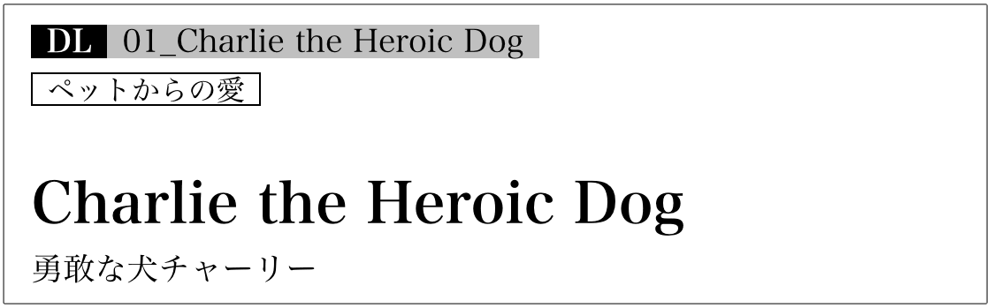
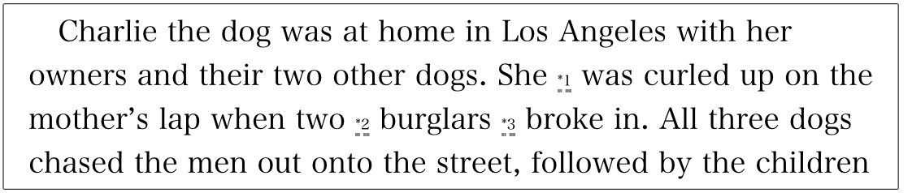

| [音声DL付]英語で泣ける ちょっといい話２ ちょっといい話シリーズ | |
| ちょっといい話製作委員会 | |
| (2015) | |
※参照項目から元の箇所に戻るには、お使いのビューワーの仕様に従ってください。または一旦目次を表示し、戻りたい箇所の近くの見出しをタップして戻ってください。
Foreword
はじめに
「興味深い内容で、最後まで読み通せるリーディング教材になかなか出合えない」、「英語の多読に興味はあるけれど、自分のレベルに合う本を見つけるのが難しい」──そんな悩みを解決するのが、本書『英語で泣けるちょっといい話2』です。『英語で泣ける ちょっといい話』『英語で元気が出る ちょっといい話』『英語で心いやされる ちょっといい話』に続く、「ちょっといい話」シリーズの4作目となります。
本書には、アメリカを中心とした英語圏で知られる「ほろりとくる」物語や中国やスペイン発の物語、そして日本人が主人公の物語など、合わせて19編を収録しています。多くの人々に読まれ、愛されてきた作者不明の物語あり、実話をベースに書き下ろされた物語ありと、幅広いテーマを扱っているのも特長です。
それぞれのストーリーは、アルクの「標準語彙水準12000」（SVL［Standard Vocabulary List］12000）に基づき、初級3000語レベルの英単語を中心に用いて、リライトしたり、書き下ろしたりしました。やさしい単語と基本的な構文がベースになっているので、英語でダイレクトに感動を味わえます。また、少し難しめの単語や固有名詞には語注が付いているので、スムーズに読み進めることができます。
無料でダウンロードできる音声には、物語本文の英文全てが収録されています。音読のお手本として、また、リスニング、リピーティング、シャドーイングなどを通じて、「聞く」「話す」力を伸ばす教材としてもご活用いただけます。さらにダウンロード特典をご利用いただくと、「このストーリーのポイント」部分の音声に加え、本書未収録の物語2編もお楽しみいただけます。
収録した物語は、いずれも読めば誰かに話したくなるようなものばかり。本書を通じて、「英語でダイレクトに内容を理解できた喜び」「読み切った達成感」を感じていただき、多読へのモチベーションとしていただければ幸いです。
アルク 英語出版編集部 ちょっといい話製作委員会
Contents
目 次
音声ファイルのダウンロードと再生方法、無料特典ダウンロードについて
特典
ダウンロードでさらに2編読めます 詳細こちら
You Are Somebody's Son あなたはどなたかの息子さん
Lou Gehrig ルー・ゲーリッグ
How to use this book
本書の構成と使い方
本書は、アメリカを中心とした英語圏をはじめ、世界各国で知られている「泣ける ちょっといい」物語を計19編収録しています。
無料ダウンロード音声トラック番号
それぞれの物語本文の英語音声が無料でダウンロードできます。
ストーリーのキーワード
ストーリーのタイトル

リード文
物語の概要を押さえましょう。
英文

ストーリーの語数
一話あたりの単語数です。短いものから読むのもいいでしょう。
このストーリーのポイント
それぞれの話のポイントが書かれています。一つの意見として読んでみてください。
なお、この部分の音声はダウンロードすることでお聞きいただけます（こちら参照）。
日本語訳
英文が難しく感じられたら、日本語訳を参照してみましょう。
語注

物語の英文は、全てアルクの「標準語彙水準SVL12000」 * の初級3000語レベルの語彙をベースに、リライトされているか、書き下ろされています。また、固有名詞や難しいと思われる単語には語注を付け、スムーズに読み進められるよう構成しています。
* 「標準語彙水準SVL12000」とは、日本人の英語学習者にとって有用な英単語１万2000語を選び出し、12のレベルに区分した語彙リストです。
物語は、「家族やペットについての話」、「心温まる話」、「考えさせられる話」、そして「愛や人とのつながりについての話」の4つのカテゴリーに分けられ、収録されています。
なお、本書は無料で音声をダウンロードしていただけます。音声を参考に音読、リピーティング、シャドーイング用教材として活用したり、音声のみでリスニング教材として利用するなど、リーディング以外の用途にも幅広くお使いいただけます。
音声ファイルのダウンロードと再生方法、
ダウンロード特典について
※PC専用のサイトです。まずはこちらにアクセス！
アルク ダウンロードセンター
http://www.alc.co.jp/dl/
(2015年12月時点の情報。今後詳細が変更になる可能性があります）
「アルク ダウンロードセンター」にアクセス、電子書籍版『英語で泣ける ちょっといい話２』をクリック。
お申し込みフォームに必要事項をご記入の上送信していただくと、ご登録いただいたメールアドレスに「ダウンロードページURL」の案内が届きます。
メールの本文に記載されているURLにアクセスして、圧縮ファイルをダウンロードしてください。
◆ ダウンロード音声ファイルについて
PCにダウンロードした圧縮ファイルを解凍ソフトで展開の上、iTunesなどの音声再生ソフトで取り込んでご利用ください。音声再生ソフトでのファイルの取り込み方法や携帯音楽プレーヤーでの利用方法については、ソフトやプレーヤーに付属するマニュアルでご確認ください。
音声ファイルは、音声再生ソフトで次のように表示されます。
出版社名（アーティスト名）：「ALC PRESS INC.」と表示
書名（アルバム名）：『英語で泣ける ちょっといい話２』
ダウンロードした音声はトラック番号が表示されます。
本書では、ダウンロードした音声を使用する部分はDL01_Charlie the Heroic Dog のように、ダウンロードした音声のトラック番号に対応しています。該当のトラックを再生して学習してください。
◆ ダウンロード特典について
本書ご購入の方限定のダウンロード特典をご用意いたしました。
ぜひ学習にご活用ください。
「このストーリーのポイント」ダウンロード音声
本書掲載の「このストーリーのポイント」の英文音声です。ストーリー音声と併せてお楽しみください。
なお、本書では、本文中のダウンロード音声ファイルについて、次のように表示しています。
トラック01の場合：DLMP3_01
「本書未収録の物語2編」ダウンロードテキスト＆音声
英文本文＋日本語訳（PDF形式）と英文音声（MP3形式）をダウンロードできます。さらに「泣ける ちょっといい話」をお読みいただけます。
◯You Are Somebody's Son（あなたはどなたかの息子さん）
You Are Somebody's Son_text.pdf（テキスト）
DLMP3_20_1（本文音声）
DLMP3_20_2（このストーリーのポイント音声）
クリスマスが近いある朝、パトリシアは夫を交通事故で失う。加害者は三人の幼い子どもを持つ若い父親だった。夫を失った深い悲しみの中、パトリシアは......。
◯Lou Gehrig（ルー・ゲーリッグ）
Lou Gehrig_text.pdf（テキスト）
DLMP3_21_1（本文音声）
DLMP3_21_2（このストーリーのポイント音声）
「鉄の馬」の異名を持つ偉大な野球選手ルー・ゲーリッグを突然襲ったもの、それは皮肉にも、全身の筋肉が動かなくなる病だった......。
DL01_Charlie the Heroic Dog
ペットからの愛
Charlie the Heroic Dog
勇敢な犬チャーリー
犬のチャーリーは、飼い主家族と仲良く暮らしていた。ある日、この家族を強盗が襲う。家族を守るために強盗を追い払うチャーリーだったが、その際に脚を撃たれ、保護施設へ行くことに。チャーリーと飼い主たちが再び平穏に暮らせる日は来るのだろうか......。
Charlie the dog was at home in Los Angeles with her owners and their two other dogs. She*1 was curled up on the mother's lap when two*2 burglars*3 broke in. All three dogs chased the men out onto the street, followed by the children trying to stop their*4 beloved pets from getting into danger. As the men were running away, one of them*5 fired several shots.
The children stopped*6 in their tracks, but in front of them, two bullets hit Charlie, hurting her front and back right legs. As the children screamed, one of the other dogs tried to help Charlie by pushing her back into the house. The mother is sure that if Charlie had not been*7 in the line of fire, the bullets would have hit her children.
After the police arrived, Charlie was taken to a*8 shelter, because her owners could not pay for the*9 surgery she needed. The whole family cried as they waved Charlie goodbye.
The workers at the shelter fell in love with Charlie, and one of them decided to contact the North Central Shelter*10 Intervention Program, a program that helps owners pay for*11 medical treatment for their pets.
That program set up a*12 crowdfunding page for Charlie, to try to get her the treatment she needed and then get her back to her family.
Their goal was to*13 raise $4,000. The message on the page read: "Please help us raise the funds to help this loyal and*14 heroic dog get the care she needs. We want to*15 reunite her with her family! She misses them very, very much."
Many people responded, and Charlie*16 ended up having one of her legs*17 amputated.
The family says that Charlie gets around fine on three legs, and that she was soon back to her old self,*18 licking and kissing her family.
And the page created for her?
It raised more than $8,000 ---*19 significantly more than the cost of her surgery. All of the extra money will go to the North Central Shelter Intervention Program, to help them help other pets and their loving owners in the future.
350 words
The point of this story
DLMP3_01
Charlie the dog was shot when she*20 charged two burglars. To save this brave dog and return her to her family, 355 dog lovers*21 donated over $8,000 in just 10 days through a crowdfunding*22 site. Charlie is said to be living now happily with her family in Los Angeles.
犬のチャーリーは、飼い主と他の2匹の犬と一緒にロサンゼルスの家にいました。チャーリーがお母さんの膝の上で丸まって寝ていると、二人組の強盗が押し入ってきました。チャーリーたち3匹の犬は強盗を通りへ追い払い、子どもたちは愛するペットを危険な目に遭わせまいと後を追い掛けました。男たちが逃げ去るとき、一人が何発か銃弾を放ちました。
子どもたちはその場で立ち止まりましたが、目の前でチャーリーに2発の銃弾が命中し、チャーリーは右の前脚と後ろ脚にけがを負いました。子どもたちは叫び声を上げ、別の1匹がチャーリーを家の中に押し戻して助けようとしました。母親は、もしチャーリーが弾道上にいなかったら、銃弾は子どもたちに当たっていたに違いないと確信しています。
警察が到着すると、チャーリーは保護施設に連れて行かれました。飼い主にはチャーリーに必要な手術の費用を払うことができなかったからです。チャーリーにさようならと手を振りながら、家族全員が泣きました。
保護施設で働く人たちはチャーリーを大好きになり、そのうちの一人が中北部保護施設介入プログラム、つまり飼い主がペットの治療費を払う手助けをするプログラムに連絡を取ることに決めました。
そのプログラムは、チャーリーのためにクラウドファンディングのウェブページを立ち上げました。それは、必要な治療を受けさせて家族の元に返そうというものでした。
目標は4,000ドルを集めることでした。ウェブページのメッセージには「この忠実で勇敢な犬が、必要な治療を受けられるよう、資金集めにご協力ください。チャーリーを家族ともう一度会わせてあげたいのです！ チャーリーは家族に会えなくて、とてもとても寂しがっています」と書かれていました。
たくさんの人たちがそれに応え、結局チャーリーは脚を1本切断することになりました。
家族によると、チャーリーは3本の脚で上手に歩いて回り、すぐに以前のチャーリーに戻って、家族をなめたりキスしたりしているそうです。
チャーリーのために作られたウェブページはというと？
8,000ドル以上のお金が集まったのです──それはチャーリーの手術費用をはるかに上回る額でした。必要以上のお金は全て、この先、他のペットとその愛情あふれる飼い主の救援に役立てるため、中北部保護施設介入プログラムへ送られることになっています。
このストーリーのポイント
犬のチャーリーは、二人の強盗に立ち向かったときに、2発撃たれました。この勇敢な犬の命を救い、家族の元に返すために、355人の愛犬家がクラウドファンディングのサイトを通じ、わずか10日で8,000ドル以上を寄付しました。チャーリーは現在、ロサンゼルスで家族と幸せに暮らしているそうです。
*1 be curled up：丸まって寝る
*2 burglar：強盗
*3 break in：押し入る
*4 beloved：最愛の
*5 fire：...を発砲する
*6 in one's tracks：その場で
*7 in the line of fire：弾道（上）に
*8 shelter：保護施設
*9 surgery：手術
*10 intervention：介入
*11 medical treatment：治療
*12 crowdfunding：クラウドファンディング。インターネットを通じて資金を募ること
*13 raise：（資金を）集める、募る
*14 heroic：勇敢な
*15 reunite ... with ~：...を〜と再会させる
*16 end up -ing：結局...することになる
*17 amputate：（手足を）切断する
*18 lick：...をなめる
*19 significantly：かなり
*20 charge：...に襲い掛かる、突撃する
*21 donate：...を寄付する
*22 site：サイト
DL02_Burnt Toast
感謝と思いやり
Burnt Toast
焦げたトースト
幼いころ、「私」は共働きの家で育った。母は毎日仕事に追われ、夕食を作るのもままならない。そんなある晩のこと、食卓に着いた父の前に置かれたのは真っ黒に焦げたトーストだった。父は何と言うだろう。「私」が固唾をのんで見守っていると......。
When I was a kid, my mother worked, and she never got home until 6 in the evening. So she didn't have much time to cook. Sometimes we would just have breakfast food at*1 dinnertime, because it was fast and easy.
One night my mother*2 set out a plate of eggs, bacon, and extremely*3 burnt toast --- it was black --- in front of my father.
I*4 waited to see*5 if he would say anything, but he just spread butter and jam onto the toast and ate every*6 bite. He smiled at me and asked how my day at school had been.
My mom told him she was sorry about the toast. He said, "Hey,*7 honey, no problem. I love burnt toast."
Later that night, when I went to kiss my dad good night, I asked, "Do you really like your toast burnt?"
He answered, "It*8 doesn't really*9 bother me. Your mother had a long day at work but then*10 went to the trouble of making dinner for us. And we were all together to eat it. I*11 figure a little burnt toast never hurt anybody!"
Now I have a family and enjoy working and*12 child-rearing. I know how easy it is to burn the toast*13 once in a while.
208 words
The point of this story
DLMP3_02
You are very tired and really do not feel like cooking, but you do it anyway for your family. You then make a mistake, and the dish is all wrong. It's a kind of situation most of us can*14 relate to. When our family does housework, we should*15 be thankful rather than finding faults. If a family member complains about your cooking, let him or her read this story.
私が子どものころ、母は働いており、夕方6時前に帰宅したためしがありませんでした。そんなわけで、母には料理をする時間もあまりありませんでした。時には、夕食時なのに朝食と全く同じもので済ませてしまうこともありました。短時間で簡単にできたからです。
ある晩のこと、母は、卵にベーコン、そしてひどく焦げた──真っ黒の──トーストが載ったお皿を父の前に置きました。
私は、父が何か言うだろうかと様子を見守っていました。しかし、父はただそのトーストにバターとジャムを塗ると、一口残らず食べてしまったのです。そして私の方を向いてにっこり笑い、学校はどうだったかと尋ねました。
母が父にトーストのことをわびました。「なあに、どうってことないよ。僕は焦げたトーストが大好きなんだ」と父は言ったのです。
夜も更けてから、父におやすみのキスをしに行ったとき、私は「お父さんは、本当にトーストは焦げたのが好きなの？」と尋ねました。
父はこう答えました。「大したことじゃないさ。お母さんはね、一日中働いてきたんだ。それなのに、わざわざ家族のために夕食を作ってくれた。それを家族そろって一緒に食べた。トーストが少しくらい焦げていたって、誰も困ったことにはならないさ！」
今では家庭を持ち、仕事や子育てを楽しんでいる私には分かります。ついトーストを焦がしてしまうことが、時にはあるということを。
このストーリーのポイント
くたくたで料理なんかする気になれないけれど、それでも家族のために食事の支度をする。そしたら失敗して、料理はめちゃくちゃ。ほとんどの人が共感できる状況です。家族が家事をしてくれたら、あら探しをするよりも、むしろ感謝しないといけませんね。料理に文句をつける家族がいたら、この話を読んでもらいましょう。
DL03_Voice of Inspiration
希望と情熱
Voice of Inspiration
励ましの声
ある音楽オーディション番組のステージに立つハンサムな若者。戦火の真っただ中で生まれた彼は、身体に障害があるだけでなく、自分の年齢も正確には分からないのだった。舞台袖の家族に見守られ、彼は歌い始める。魂を込めた「イマジン」を......。
The young man stood alone on the stage. The spotlights*1 illuminated his handsome*2 features, but they also*3 revealed something else ... Was half of his arm missing?
The audience for the TV music competition program,*4 The X Factor, cheered and*5 applauded his*6 presence.
As they always do, the judges asked the youth some basic questions. "Name?" "Emmanuel," he said shyly.
"So, who's here with you today?" asked one judge. "My*7 mom, my cousin, my*8 auntie and my brother," he replied proudly. The camera then focused on the cheerful group watching*9 in the wings, and*10 viewers could see that his brother had similar*11 disabilities.
"How old are you?" was the next question. "Well, I'm not exactly sure," was the surprising reply.
With the audience members now*12 sitting on the edge of their seats, Emmanuel explained how his mother, Australian Moira Kelly, had found him in an*13 orphanage in Iraq. At the time, he had "no*14 birth certificate, no passport, nothing." Born in the middle of a war zone, he and his brother were found lying inside a shoe box in a park by the*15 nuns who ran the orphanage.
He said when Moira Kelly first walked through the orphanage door, it was like "looking at an angel." Moira brought the two boys back to Australia for*16 surgery, and then, "Um,*17 sort of, Mom fell in love with both of us," he said.
At this point, there were few dry eyes among the audience.
The song he chose to sing was John Lennon's "Imagine." His smooth vocals*18 accompanied by the touching*19 lyrics*20 pushed the audience up onto their feet to give him a*21 rousing*22 standing ovation.
"It makes everything that you worry about just so*23 pathetic," said one judge. "I need some tissues," said another.
His version of the song touched people around the world, including Yoko Ono, John Lennon's wife. She*24 acknowledged his moving performance on the imaginepeace.com website, where she wrote: Thank you, Emmanuel. You sang beautifully! Thank you. John would have been proud of you. Thank you, thank you, thank you. Love, Yoko
*25 Unfortunately, Emmanuel was cut after his second appearance on the show --- when he forgot his song's lyrics --- but he has*26 gone on to write songs, produce three singles, perform concerts, and tour and speak throughout North America and Europe.
Emmanuel has said*27 humbly, "I may not have the greatest voice or looks, but I do have a passion, and that is to sing and entertain for the world. My dream is to make people smile through my music and to show young kids that it is OK to*28 strive for your dreams."
435 words
The point of this story
DLMP3_03
In 2011, Emmanuel Kelly, a 17-year-old, entered the TV program "The X Factor" and moved the whole world to tears with his background story and his song. He did not survive the competition, but he soon emerged as a*29 singer-songwriter and gained much popularity. He also works along with NPOs to*30 eliminate bullying and to educate kids with life skills to acquire confidence and strive for their dreams.
その若者は一人、ステージに立っていました。スポットライトがそのハンサムな顔立ちを照らし出しましたが、他にも、明らかにされたことがありました。彼は......腕が半分ないのでしょうか？
テレビの音楽オーディション番組『Ｘファクター』の観客は、彼の登場に声援と拍手を送りました。
いつものように、審査員たちはその若者に、基本的な質問をしました。「名前は？」「エマニュエルです」と彼ははにかみながら言いました。
「それで、今日は誰とここに来たのですか？」と一人の審査員が尋ねました。「母と、いとこと、おば、それと兄です」と彼は誇らしそうに答えました。そこでカメラは舞台の袖で見ている陽気なグループに寄り、視聴者には彼の兄にも同じような障害があることが分かりました。
「何歳ですか？」というのが次の質問でした。「ええと、正確には分からないんです」と、驚くべき答えが返ってきました。
興味津々に見守る観客に向かい、エマニュエルは、自分の母親であるオーストラリア人のモイラ・ケリーが、イラクの児童養護施設にいる自分と出会ったいきさつを話しました。そのとき、彼は「出生証明書もパスポートも、何も」持っていませんでした。紛争地帯のど真ん中で生まれた彼と兄は、公園で靴箱の中に横たわっているところを、児童養護施設を運営していた修道女たちに発見されたのです。
エマニュエルは、モイラ・ケリーが初めて施設のドアから入ってきたとき、まるで「天使を見ている」ようだったと語りました。モイラは二人の少年を、手術を受けさせるためにオーストラリアへ連れて帰りました。それから、「うーん、何て言うか、ママは僕ら二人に恋しちゃったみたいなんです」と彼は言いました。
この時点で、観客の中に涙を浮かべていない人はほとんどいませんでした。
彼が選んだ歌は、ジョン・レノンの「イマジン」でした。彼の滑らかな歌声は、琴線に触れる歌詞と相まって観客を立ち上がらせ、熱狂的なスタンディング・オベーションとなりました。
「自分の悩みなんて、どれもバカバカしくなるわね」と審査員の一人は言いました。「ティッシュが要りますよ」と別の審査員が言いました。
彼による「イマジン」は世界中の人々を感動させ、その中にはジョン・レノンの妻であるオノ・ヨーコも含まれていました。彼女は彼の感動的なパフォーマンスに対してイマジン・ピース.comというウェブサイトで感謝の意を表し、次のように書きました。ありがとう、エマニュエル。素晴らしい歌声でした！ ありがとう。ジョンもあなたのことを誇りに思ったことでしょう。ありがとう、ありがとう、ありがとう。愛を込めて、ヨーコ
残念ながら、エマニュエルは2度目の出演をもって敗退してしまいました。歌詞を忘れてしまったのです。しかし、彼は曲作りに取り掛かり、3枚のシングルを制作し、北米やヨーロッパ中でコンサートツアーや講演をして回りました。
エマニュエルは謙虚に、こう言っています。「僕は、声も容姿もとびきりいいってわけじゃないだろうけど、情熱だけは持っています。世界のために歌を歌って、人々を楽しませようとしているんです。僕の夢は、音楽を通じてみんなに笑顔になってもらうこと。そして、夢をかなえるために頑張ったっていいってことを、小さな子どもたちに見せてあげたいんです」
このストーリーのポイント
2011年、17歳でテレビ番組『Xファクター』に出演し、その生い立ちと歌で世界中を涙させたエマニュエル・ケリー。競争を勝ち抜くことはできませんでしたが、すぐにシンガー・ソングライターとしてデビューし、大人気を得ました。彼はまた、NPOと共に、いじめをなくす運動や、子どもたちが自信を身に付け、夢に向かって頑張ることができるように、ライフスキルを養う活動を行っています。
*1 illuminate：...に光を当てる
*2 features：顔立ち、容貌
*3 reveal：...を明らかにする、はっきり見せる
*4 The X Factor：Xファクター。イギリス発の音楽オーディション番組。さまざまな国で同フォーマットの番組が制作されており、この話はオーストラリア版での出来事
*5 applaud：...に拍手を送る
*6 presence：存在、姿
*7 mom：ママ、お母さん
*8 auntie：おばさん
*9 in the wings：（舞台の）袖で
*10 viewer：視聴者
*11 disability：障害
*12 sit on the edge of one's seat：興味津々に見守る
*13 orphanage：児童養護施設
*14 birth certificate：出生証明書
*15 nun：修道女、尼僧
*16 surgery：手術
*17 sort of ...：いわば...みたいな
*18 accompanied by ...：...を伴って
*19 lyrics：歌詞
*20 push ... up onto one's feet：...を立ち上がらせる
*21 rousing：熱狂的な
*22 standing ovation：スタンディング・オベーション
*23 pathetic：取るに足りない
*24 acknowledge：...に感謝の意を示す
*25 unfortunately：残念ながら
*26 go on to ...：...に取り掛かる、次に...をする
*27 humbly：謙虚に、謙遜して
*28 strive for ...：...のために努力する、頑張る
*29 singer-songwriter：シンガー・ソングライター
*30 eliminate bullying：いじめをなくす
DL04_Power of Love
愛情と奇跡
Power of Love
愛の力
ケイトは双子を出産するが、先に生まれたジェイミーの命は助からなかったと告げられる。ケイトと夫のデイビッドは、ジェイミーの最期をせめて幸せなものにしてあげたいと思い、二人でジェイミーを抱き締めたところ......。
Kate and David in Australia were looking forward to becoming parents of twins. Before their babies were even born, they named them Emily and Jamie.
Kate was only 6-and-a-half*1 months pregnant when she started having problems. Doctors told her that she needed to have a*2 C-section right away.
She said that she wanted to try to give birth naturally, and the staff agreed to help her do that.
Jamie was born first, and then Emily, each in their own*3 birth sacs. Emily gave a loud scream when she was pulled from the sac, but Jamie was quiet.
The medical team worked on Jamie for 20 minutes. At that point, Jamie had no movement, no sounds of breathing and no response to touch.
The doctor finally turned to Kate and asked her if she had a name picked out for her son. She told them yes, his name was Jamie.
The doctor said, "Jamie didn't*4 make it. We've lost him."
Emily was taken to the*5 intensive care unit for*6 premature babies.
The doctor sat down at the edge of Kate's bed, still holding Jamie, who was now wrapped in a blanket. The doctor began talking to Kate, but she was not listening to a word he said.
"I don't want him wrapped in that blanket by himself while he passes away," she thought.
She took the tiny child away from the doctor and said that they wanted some time alone with the baby. The doctor left the room.
Then Kate asked her husband to take off his shirt, so that both of them could hold him close and he could feel the*7 warmth of their skin. After all, he had just spent months inside the warmth of his mother's body, hearing her heart beat.
His mother and father held him close and spoke to him, telling him he had a sister and making him promises about the future.
After about five minutes, Jamie began to move a little. A doctor who was passing told the couple that these small movements were part of dying.
Kate said later, "If he was*8 on his way out of the world, we wanted him to know who his parents were and to know that we loved him before he died." They were trying to make his last moments happy ones.
Then those moments began to turn into hours. Kate was sure that Jamie was breathing. Then they saw him*9 grab David's finger.
They tried to call a doctor back to the room, but the doctors did not want to come. So they*10 made up a story. They told a nurse that they could*11 live with the baby's death, but that they wanted the doctor to explain it. The nurse called him back into the room.
When the doctor lifted Jamie from his mother's chest, the boy gave a weak cry, like a kitten. He was alive!
The doctor listened to Jamie's heart and just kept shaking his head and saying, "I don't believe it, I don't believe it."
Jamie and Emily are now 5. "Nobody can tell he had such a different start," his mother said.
The parents waited until the twins were old enough to tell them the story. When they did, Emily*12 burst into tears and just kept*13 hugging Jamie.
Today, Jamie and Emily love to tell people that Jamie was once dead but is now alive.
564 words
The point of this story
DLMP3_04
This is a true story that happened at a hospital in Australia on March 25, 2010. Noted as a*14 miraculous story of how the loving touch of a mother and father was able to bring a baby back to life, it moved people in English-speaking countries. This method of warming a premature baby with its parents' skin is called "kangaroo care" in Australia, and it is practiced in poor countries where*15 incubators are not*16 readily available.
オーストラリアに住むケイトとデイビッドは、双子の親になるのを楽しみにしていました。赤ちゃんたちがまだ生まれてもいないうちから、エミリーとジェイミーと名付けていました。
ケイトの体に問題が起こり始めたとき、ケイトはまだ妊娠6カ月半でした。医師はすぐに帝王切開を受ける必要があると告げました。
彼女は自然分娩で産みたいと言い、スタッフは協力することに同意しました。
ジェイミーが先に生まれ、次にエミリーが生まれました。それぞれ羊膜に包まれていました。エミリーは羊膜から引き出されると大きな産声を上げましたが、ジェイミーは静かでした。
医療チームは20分間、ジェイミーに治療を施しました。その時点で、ジェイミーは全く動かず、呼吸音もせず、触っても反応を示しませんでした。
医師はとうとうケイトの方を向き、もう息子の名前を決めてあるかどうか尋ねました。彼女は「はい、名前はジェイミーです」と答えました。
医師は、「ジェイミーは助かりませんでした。亡くなりました」と言いました。
エミリーは未熟児のための集中治療室に連れて行かれました。
医師はケイトのベッドの端に座りました。医師は毛布にくるまれたジェイミーを、まだ抱きかかえていました。医師はケイトに話し掛けましたが、ケイトには一言も聞こえていませんでした。
「この世を去ろうとしているときに、独りぼっちでそんな毛布にくるんでおいたりしたくないわ」と彼女は思いました。
彼女はとても小さな赤ちゃんを医師から抱き上げ、しばらく自分たちだけにしてほしいと言いました。医師は部屋から立ち去りました。
それからケイトは、夫にシャツを脱ぐように頼みました。二人でジェイミーをしっかりと抱き締め、ジェイミーが二人の肌のぬくもりを感じられるように。何しろ、ジェイミーは母親のおなかのぬくもりの中で、母親の心臓の音を聞きながら、先ほどまで数カ月過ごしてきたのです。
母親と父親は彼をしっかりと抱き締め、語り掛けました。妹がいることを話したり、将来について約束したりしました。
5分ほどたつと、ジェイミーが少し動き始めました。通り掛かった医師が夫婦に、こうした小さな動きは亡くなる過程で起こるものだと言いました。
「もしジェイミーがこの世を去っていくところだったなら、彼が逝ってしまう前に両親が誰なのか知ってほしかったし、私たちがとても愛していたことを知ってほしかったんです」とケイトは後に言いました。二人は、ジェイミーの最期の瞬間を、幸せなひとときにしようとしていました。
その後、その瞬間は数時間になりました。ケイトはジェイミーが息をしていると確信していました。それに、ジェイミーがデイビッドの指を握るのを見たのです。
二人は医師を部屋に呼び戻そうとしましたが、医師は来ようとしませんでした。それで二人は作り話をしました。赤ちゃんの死を受け入れる覚悟はあるが、医師に説明をしてほしいのだと看護師に話したのです。看護師は、医師に、部屋へ戻るよう伝えました。
医師がジェイミーを母親の胸から持ち上げたとき、その男の子は弱々しい泣き声を上げました。まるで子猫のように。彼は生きていたのです！
医師はジェイミーの心音を聞き、「信じられない、信じられない」と言いながら首を振るばかりでした。
ジェイミーとエミリーは現在5歳です。「始まりがこんなに普通と違ってたなんて、誰にも分からないわ」と母親は言いました。
両親は、双子たちに物心が付くころになって初めてこの話をしました。話をするとエミリーはわんわん泣き出し、ジェイミーを抱き締めるばかりでした。
今では、ジェイミーとエミリーは、ジェイミーが一度死んでまた生き返ったんだと人に話すのが大好きなのです。
このストーリーのポイント
これは2010年3月25日に、オーストラリアの病院で実際にあった話です。母親と父親の愛情のこもったスキンシップが、赤ちゃんを生き返らせた奇跡として英語圏の国々で感動を呼びました。未熟児を両親の肌で温める方法は、オーストラリアでは「カンガルーケア」と呼ばれていて、保育器が入手しにくい貧しい国々で実践されています。
DL05_Son of a Washerwoman
親から子への愛
Son of a Washerwoman
洗濯婦の息子
成績優秀な青年が、大企業の管理職に応募した。面接で母親の職業を問われた青年は、洗濯婦だと答える。すると取締役は青年に、家に帰ったらあることをして、もう一度面接に来るように言うのだった......。
A young man with an*1 impressive*2 academic record went to*3 apply for a job as a manager in a big company. He passed the first interview and then went to meet with the firm's director, who was to make the final decision.
The director saw on the young man's*4 CV that every year, from high school and college and on to*5 graduate school, the young man's grades were*6 consistently good.
He asked, "Did you receive any*7 scholarships in school?" The young man answered, "No, none at all."
"And was it your father who paid your school fees?" the director continued. "No, my mother, actually," the young man said. "My father passed away when I was 1."
"What does she do?" the director asked. "She's a*8 washerwoman," came the answer. The director asked the young man to show him his hands. The young man held out his hands. They were smooth and perfect.
"Have you ever helped your mother wash the clothes?" was the next question. The answer was no. The young man said that his mother had always wanted him to study and read more books. "And anyway," he added, "she can wash clothes much faster than me."
The director said, "I have a request. When you go home today, wash your mother's hands. Then come back and see me*9 first thing tomorrow morning."
The youth was happy to have another interview with the director --- and so soon. He felt he had a good chance of getting the job.
When he got home, he*10 cheerfully asked his mother to let him wash her hands. His mother felt strange about it, but she was happy to help him with his interview. She put out her hands and her son began to wash them slowly.
This was the first time that he had noticed how*11 wrinkled his mother's hands were, and how*12 bruised. Some of the*13 nicks were so painful that his mother's hands*14 jerked when he touched them.
The young man now thought about the price that his mother had paid for him to go to school. The price she had paid for his*15 graduation, his good marks and his future were there in the nicks in her hands.
After he had finished, he took some skin cream and rubbed it into her rough hands. Then he quietly finished washing all of that day's clothes for her. That night, for the first time, he and his mother stayed up late talking.
The next morning, the young man appeared again at the director's office. The director asked him, "Well, what did you do last night?" The young man told him that he had washed his mother's hands and had also finished washing all of the day's big*16 pile of clothing.
The director asked how he felt. The young man said, "I learned something about the importance of being thankful. Without my mother, I would not be here today. By helping her, I realized how hard the work is that she does*17 day in and day out. I've started to think about the importance of family."
The director said, "That's the kind of person that I want for this job. Someone who*18 appreciates the help of others, who knows how much work it takes to actually get anything done.*19 You're hired."
*20 From then on, the young man never forgot his mother's hands again. He worked hard and received the respect of his employees. All of them also worked hard, and worked well together as a team. The company's*21 performance improved*22 steadily.
588 words
The point of this story
DLMP3_05
This moral of the story is: If parents give their children whatever they want, not let them do any housework, and always*23 put them first, those children will not only be*24 ignorant of their parents' efforts or struggles but also develop "*25 entitlement*26 mentality." Such children generally lack*27 consideration and*28 gratitude toward others and, when they grow up, will not succeed in the*29 workplace. Be careful not to be*30 overprotective and give too much.
優れた学歴を持つある青年が、大企業の管理職に応募しました。彼は一次面接に合格し、最終決定を下す立場の取締役との面接に臨みました。
取締役が青年の履歴書に目を通すと、高校から大学、そして大学院に至るまで、一貫して優秀な成績でした。
取締役は、「学校で奨学金を受けていましたか？」と質問しました。青年は、「いいえ、全く受けておりません」と答えました。
「では、学費を支払ったのはお父さんですか？」と取締役が続けました。「いいえ、実は母です」と青年は言いました。「父は、私が1歳のときに亡くなりました」
「お母さんは何のお仕事をされていますか？」と取締役が尋ねました。「洗濯婦をしております」という答えが返ってきました。取締役は青年に両手を見せてくださいと言いました。青年は両手を差し出しました。手はすべすべしていて、傷一つありませんでした。
「お母さんが洗濯をするのを手伝ったことはありますか？」というのが次の質問でした。答えは、「いいえ」でした。青年は、母はいつも自分には、勉強してもっとたくさんの本を読むことを望んでいたのだと言いました。「それに、いずれにしても」と青年は付け加えました。「母の方が私よりずっと速く服を洗えますから」
取締役は、「一つお願いがあります。今日家に帰ったら、お母さんの手を洗ってあげてください。そして明日の朝一番に、もう一度私に会いに来てください」と言いました。
青年は、取締役にもう一度、しかもこんなに早く面接をしてもらえることをうれしく思いました。彼は、その仕事に就ける可能性は高いと感じました。
家に帰ると、彼は上機嫌で母親に手を洗わせてほしいと言いました。母親は変な感じがしましたが、喜んで息子の面接の手助けをしようと思いました。母親が手を差し出すと、息子はゆっくりと洗い始めました。
このとき初めて、彼は母親の手がこんなにもしわだらけで傷だらけであることに気付いたのでした。傷はとても痛々しく、彼が触ると母親の手はビクッとしました。
自分を学校に行かせるために母親が払った代償について、青年はようやく思いをはせたのです。自分が卒業するために、良い成績を取るために、そして将来のために母親が払った代償が、その手の傷にありました。
手を洗い終えると、彼はスキンクリームを持ってきて、母親の荒れた手に塗ってあげました。それから何も言わず、その日の全ての洗濯物を母親の代わりに洗いました。その夜初めて、彼と母親は夜遅くまで語り合いました。
次の朝、青年は再び役員室に現れました。取締役は、「それで、昨夜は何をしましたか？」と質問しました。青年は、母親の手を洗い、それから山積みになったその日一日分の洗濯物も全て洗ったと答えました。
取締役は彼にどう感じたか尋ねました。青年は、「感謝することの大切さについて学びました。母がいなければ、私は今日ここにいないと思います。母を手伝うことで、母が来る日も来る日もやっている仕事が、どれだけ大変かということに気付きました。家族の大切さについて考え始めました」と言いました。
取締役は言いました。「そういう人にこの仕事に就いてほしいのです。他人の助けに感謝し、何事も、実際に成し遂げるにはどれほどの労力を要するのかを分かっている人に。あなたを採用します」
それ以来、青年が母親の手を忘れることは二度とありませんでした。彼は懸命に働き、従業員から尊敬されました。彼らもまた、皆懸命に働き、チームとしてよく協力し合いました。会社の業績は着実に上がっていったのでした。
このストーリーのポイント
この話の教訓は次の通りです。「もし親が子どもに、欲しがるものを何でも買い与え、手伝いをさせず、常に子どもを最優先すると、その子どもは親の努力や苦労に気づかないばかりでなく、『やってもらって当たり前という考え方』を身に付けてしまう。そのような子どもたちは、たいてい他人に対する思いやりや感謝に欠けるため、将来、職場で成功はしないだろう。過保護にして、子どもに与え過ぎないよう、気を付けよう」
*1 impressive：見事な
*2 academic record：学業成績、学歴
*3 apply for a job：仕事に応募する
*4 CV：履歴書。curriculum vitaeの略
*5 graduate school：大学院
*6 consistently：一貫して
*7 scholarship：奨学金
*8 washerwoman：洗濯婦
*9 first thing tomorrow morning：明日の朝一番に
*10 cheerfully：機嫌よく、明るく
*11 wrinkled：しわが寄った
*12 bruised：傷ができた、あざができた
*13 nick：（皮膚の小さな）切り傷
*14 jerk：ひきつる、がくんと動く
*15 graduation：卒業
*16 (a) pile of ...：山積みの...
*17 day in and day out：来る日も来る日も、明けても暮れても
*18 appreciate：...をありがたく思う、...に感謝する
*19 be hired：雇われる
*20 from then on：それ以来
*21 performance：業績
*22 steadily：着実に
*23 put ... first：...を最優先にする
*24 ignorant of ...：...に気付かない
*25 entitlement：権利として得られるもの
*26 mentality：考え方
*27 consideration：思いやり
*28 gratitude：感謝
*29 workplace：職場
*30 overprotective：過保護な
DL06_A Home-Cooked Dinner
人情
A Home-Cooked Dinner
手作りの食事
結婚のためにベネズエラからアメリカの都市シャーロットにやってきた、イェリツァ・カストロ。ところが彼女は、すぐに婚約者に捨てられてしまう。その後、彼女が自活の道を切り開くことができたのは、思いやりに満ちた人々との出会いがあったからだった。ある晩、カストロと子どもたちは、一人のホームレスに出会う。彼女はいてもたってもいられなくなり......。
Yelitza Castro moved from her native Venezuela to*1 Charlotte, North Carolina, in 2001, when she was 29, to join her*2 fiancé. They soon had a huge fight, and he*3 put her out on the street. "I had been in Charlotte just 15 days and I was*4 homeless," Castro*5 recalls. "I had*6 nothing but my suitcases."
But over the next days and weeks, she experienced*7 one act of kindness after another, including meeting a*8 minister, Rusty Price, who let her move in with his family for a month, even though he had known her less than a week at the time.
*9 Eventually, Castro found a job in a Cuban restaurant and started working 16 hours a day to save money.
Now she is a*10 live-in*11 housekeeper for a Charlotte family --- an independent woman and a single mother of two children.
One rainy night, she and her children saw a man standing outside with a sign asking for help. She gave the man $5, but then her kids said that they wanted to take him out to*12 dinner. Castro turned the car around and went back, but the man was gone.
That*13 got her and the kids thinking. They wanted to do something.
She started making home-cooked dinners at Price's church,*14 paying for all the food out of her own pocket. She would then go to the men's*15 shelter and invite everyone to come to the church for a meal.
At first, the men did not trust her and said no. But when they said no, Castro would simply pack up all the food, take it to the shelter, and*16 give it away in the*17 parking lot.
Pretty soon the meals at the church grew. Now Castro offers them*18 every other Saturday, and on*19 Thanksgiving and Christmas. The church and other organizations pay for the food.
One of the men who has been attending her dinners*20 regularly for years is Willie Davis. "You don't make us feel homeless," he said to Castro recently.
Before he met Castro, Davis said, "I pretty much almost gave up. But that home-cooked meal, it just brought my*21 self-esteem back up." And that helped give him the strength to*22 turn his life around. He now has his own apartment.
It isn't just the men who benefit. For Castro too, alone in a foreign country, the ties to the community make her feel good. "I'm here in the United States*23 by myself with my kids," she said recently, and she knows how hard it can be to be alone. "That dinner," she said, "it's not just a meal." It's to make the men feel "like we are family."
Now Castro has the biggest family in Charlotte.
448 words
The point of this story
DLMP3_06
This is a true story about a woman in Charlotte, North Carolina, reported in the national news in 2013. In the United States, a report says one in 30 children have experienced*24 homelessness. The rise in the*25 poverty ratio and in homelessness is a social problem. Castro wants to start a*26 soup kitchen someday and help the working poor.
イェリツァ・カストロは、2001年、29歳のときに、婚約者と暮らすため、母国のベネズエラからノースカロライナ州のシャーロットに移ってきました。二人はすぐに大げんかをして、婚約者の男はカストロを通りに放り出しました。「シャーロットに来てたった15日でホームレスになったのよ」と後にカストロはこう回想しています。「持っていたのはスーツケースだけだったわ」
しかし、その後の数日から数週間にわたって、人の優しさが身に染みる出来事が次々とカストロの身に起こったのでした。その中に、ラスティ・プライス牧師との出会いがありました。プライス牧師は当時知り合って1週間足らずだったにもかかわらず、カストロを1カ月の間、自分の家族と共に住まわせてくれたのです。
その後、ようやくカストロはキューバ料理のレストランで職を得て、貯金するために1日16時間も働き始めました。
現在、カストロはシャーロットのある家庭で住み込みの家政婦をしています。カストロは自立した女性で、二人の子どもを持つシングルマザーです。
ある雨の夜、カストロと子どもたちは、外に立っている一人の男性を見掛けました。手には、援助を求めるカードを持っていました。カストロはその男性に5ドル渡しました。ところが、その後で、子どもたちがその男性に夕食をごちそうしたいと言い出したのです。カストロは車をUターンさせて引き返しましたが、男性はすでにいなくなっていました。
このことがきっかけとなって、カストロと子どもたちは考えるようになりました。三人とも、何かしてあげたいと思ったのです。
カストロはプライス牧師の教会で、手作りの食事を作り始めました。食材の費用は全て自分で負担しました。それから彼女はホームレスの保護施設へ出向き、教会に食事を食べに来るよう全員を招いたのでした。
最初、ホームレスの人たちはカストロを信用せず、誘いを断りました。しかし断られると、カストロはさっと全部の食べ物をまとめて施設に持っていき、駐車場で配ったのでした。
すぐに教会での食事の配給は、規模が大きくなっていきました。現在、カストロは隔週の土曜日、そして感謝祭とクリスマスの日に食事を提供しています。費用は教会と他の団体が負担しています。
カストロの食事に何年も定期的に通っている人たちの一人に、ウィリー・デイビスがいます。デイビスは最近カストロに言いました。「あんたといると、自分たちがホームレスって感じがしないんだよな」
カストロに会う前のことを、彼はこう語っています。「俺はさ、もうだめだ、って諦めてたんだ。だけど、あの手作りの飯がさ、あれが俺の自尊心ってやつを呼び戻してくれたのさ」。そして、このカストロとの出会いが、デイビスに自分の人生を立て直す力を与える手助けをしたのです。今ではデイビスには、住むアパートだってあります。
恩恵を受けているのはホームレスの人たちだけではありません。外国で独りぼっちのカストロにとってもまた、こうして地域とつながりを持つことは、満ち足りた気分になるものでした。「私はたった独りで、子どもたちを抱えてこのアメリカにいるのよ」とカストロは最近述べました。彼女は独りぼっちがいかにつらいことかを知っているのです。「あの食事はね、ただの食事ではないの」とカストロは言いました。ホームレスの人たちに「まるで家族のように」感じてもらうための食事なのです。
今やカストロ家は、シャーロット一の大家族となったのです。
このストーリーのポイント
これは、ノースカロライナ州シャーロットに住む、ある女性についての実話です。2013年に全国ニュースで取り上げられました。アメリカでは、子どもの三十人に一人がホームレス経験があるという報道もあり、貧困率の上昇とホームレスの増加が社会問題となっています。カストロさんは、いつかワーキングプアを助けるスープキッチンを始めたいと思っています。
*1 Charlotte：シャーロット。ノースカロライナ州南部の都市
*2 fiancé：婚約者
*3 put ... out on the street：...を通りに放り出す、路頭に迷わせる
*4 homeless：ホームレスの、家のない
*5 recall：思い起こす、思い出す
*6 nothing but ...：...だけ
*7 one ... after another：次々と
*8 minister：牧師
*9 eventually：ようやく
*10 live-in：住み込みの
*11 housekeeper：家政婦
*12 dinner：夕食、食事。dinnerは夕食とは限らず、一日のうちの主要な食事のことを意味する
*13 get ... thinking：...に考えさせる
*14 pay for ... out of one's pocket：...を自己負担する
*15 shelter：救護施設、保護施設
*16 give ... away：...を配る
*17 parking lot：駐車場
*18 every other ...：一つおきの...
*19 Thanksgiving：感謝祭。家族や友人が集まり、一緒に食事をしながら、神に収穫を感謝する祭り。アメリカでは、11月の第4木曜日に行われる
*20 regularly：定期的に
*21 self-esteem：自尊心
*22 turn one's life around：（人）の人生を変える、好転させる
*23 by oneself：独りで
*24 homelessness：（住む）家のないこと
*25 poverty ratio：貧困率
*26 soup kitchen：スープキッチン。日本における炊き出しに当たる
DL07_The Dog on the Trash Heap
愛情と生きる力
The Dog on the Trash Heap
ごみ山の犬
野良犬の救助活動をしているエルダドは、ある日ごみ山で生きる犬の救助に向かう。そこにはひどい環境下で毛が抜け落ち、衰弱しきった白いハスキー犬がいた。動く気力もないほど衰弱していたハスキー犬のその後は......。
Eldad Hagar is a dog*1 rescuer in Los Angeles. Hope For*2 Paws, a*3 nonprofit organization that he and his wife*4 co-founded, tries to*5 rescue the hardest cases, the starving*6 stray dogs that others pass by.
Eldad has seen a lot of dogs in a lot of bad situations. But even he was shocked to see the conditions that one*7 particular dog was living in.
His first words were, "*8 Holy moly." The white*9 husky was lying*10 collapsed on an old blanket*11 amid a*12 pile of old*13 mattresses, tires and bags of*14 garbage. Her dirty fur*15 blended in perfectly with the gray-brown*16 hues of the*17 dump. She was in so much pain and so tired that she could*18 barely move. She looked at Eldad with*19 vacant eyes.
Eldad's first thought was, "OK, so she*20 definitely has*21 mange." A lot of her fur had fallen out, and her skin was covered in raw wounds. As Eldad approached, the dog opened her eyes a little wider but did not move. He was able to get close to her, gently feed her pieces of*22 cheeseburger, and carefully place a*23 leash over her head.
Eldad said later that he knew the dog*24 was in bad shape when she "didn't even have the energy" to run away as he approached.
When he stood up and said, "Let's go," the dog showed that she did not want to leave. He sat down on the trash pile with her and spent an hour petting her,*25 reassuring her and letting her know he was her friend.
Finally, he was able to lead her off the pile, and they walked slowly toward his car. When he opened the door, she jumped right in and immediately curled herself up on the seat. The trash heap became*26 progressively smaller as they rode away.
Eldad headed straight to the*27 vet's office. The dog, whom they decided to call Miley, needed*28 medicated baths and*29 treatment for all of her wounds. And then she needed time to*30 heal.
Eldad visited Miley every day at the vet's office, and on the third day, she gave him a kiss as he fed her a cheeseburger.
She stayed at the vet's for two more weeks. She was soon joined by another dog, a*31 frightened little black*32 Chihuahua Eldad had rescued from a*33 drain pipe under a very busy highway. He was given the name Frankie. The two rescued dogs became*34 fast friends. Miley and Frankie licked,*35 cuddled and comforted each other, and they soon*36 transformed into happy and healthy dogs.
421 words
The point of this story
DLMP3_07
Miley the husky was discovered as a stray dog lying on top of a*37 mound of trash and suffering from mange. Love and care --- and a new friend in the form of a little black Chihuahua --- helped to dramatically transform her into the happy and healthy dog she is today.
エルダド・ヘイガーは、ロサンゼルスに住む犬の救助者です。彼と妻が共同で設立した非営利団体ホープ・フォー・ポーズは、最も難しいケース、つまり他の人が見て見ぬふりをする、飢えた野良犬を救助しようと努めています。
エルダドは、さまざまなひどい境遇に置かれた数多くの犬を見てきました。しかしその彼でさえ、ある1匹の犬が生きている状況を見てショックを受けました。
最初に彼の口をついて出た言葉は「何てことだ」でした。白いハスキー犬が、古いマットレスやタイヤ、ごみ袋の山に囲まれて、古い毛布の上に衰弱して横たわっていました。その汚れた毛は、ごみ捨て場の灰褐色の色合いと完全に混ざり合っていました。犬はとても苦しみ疲れきっていて、ほとんど動けませんでした。彼女は、うつろな目でエルダドを見ていました。
エルダドが最初に思ったのは「これは、間違いなくかいせんにかかっているな」ということでした。その犬は毛の多くが抜け落ちてしまい、皮膚は生傷だらけだったのです。エルダドが近づくと、犬は目を少し見開いたものの、動くことはありませんでした。彼は犬に近づくことに成功し、小さくしたチーズバーガーをそっと食べさせ、慎重に首にリードを付けました。
エルダドは後に、自分が近づいても逃げる「気力すらない」ことで、その犬の健康状態が非常に悪いことが分かったと言いました。
彼が立ち上がり、「さあ、行こう」と言ったとき、その犬はそこを離れたくないそぶりを見せました。エルダドはその犬と一緒にごみ山に座り、1時間かけてなでながら安心させ、自分は味方だということを分からせました。
ようやく、彼はその犬をごみ山から連れ出すことができ、ゆっくりと車に向かって歩いていきました。車のドアを開けると犬はすぐに飛び乗り、座席の上でたちまち丸くなりました。車が遠ざかるにつれて、ごみ山は次第に小さくなっていきました。
エルダドは動物病院に直行しました。その犬はマイリーと呼ばれることになりました。マイリーは薬液が入った風呂に漬かり、傷を全て手当してもらわなければなりませんでした。そして、マイリーが治るまでには時間が必要でした。
エルダドは毎日、マイリーを病院に見舞いに行きました。3日目にチーズバーガーを食べさせているとき、マイリーは彼にキスしてくれました。
マイリーはさらに2週間入院しました。間もなく別の犬が仲間に加わりました。それは、エルダドが交通量の非常に多い幹線道路の下の排水管から救出した、おびえた小さな黒いチワワでした。その犬はフランキーと名付けられました。2匹の保護犬は親友になりました。マイリーとフランキーはお互いをなめたり、寄り添ったり、慰め合ったりしているうちに、幸せで健康な犬へと変わっていったのでした。
このストーリーのポイント
ハスキー犬のマイリーは、野良犬として発見されました。ごみの山のてっぺんに寝そべり、かいせんを患っていました。愛情と世話──そして、小さな黒いチワワという新しい友達──が、マイリーを今日の幸せで健康な犬へと、劇的に変えたのです。
*1 rescuer：救助者
*2 paw：（動物の爪のある）足
*3 nonprofit：非営利の
*4 co-found：...を共同で設立する
*5 rescue：...を救助する
*6 stray dog：野良犬
*7 particular：特定の
*8 holy moly：何てことだ
*9 husky：ハスキー犬
*10 collapse：倒れる
*11 amid：...に囲まれて、...の真ん中に
*12 pile：積み重ね、山
*13 mattress：マットレス
*14 garbage：生ごみ
*15 blend in with ...：...と混ざる
*16 hue：色合い
*17 dump：ごみ捨て場
*18 barely：ほとんど...しない
*19 vacant eye：うつろな目
*20 definitely：間違いなく
*21 mange：かいせん。寄生ダニによる動物の皮膚病
*22 cheeseburger：チーズバーガー
*23 leash：（動物をつなぐ）リード
*24 be in bad shape：健康状態が悪い
*25 reassure：...を安心させる
*26 progressively：次第に
*27 vet's office：動物病院
*28 medicated：薬用の
*29 treatment：治療
*30 heal：癒える、治る
*31 frightened：おびえた
*32 Chihuahua：チワワ
*33 drain pipe：排水管
*34 fast friend：親友
*35 cuddle：寄り添う
*36 transform into ...：...に変わる
*37 mound：山
DL08_Julio's Second Passion
夢と情熱
Julio's Second Passion
フリオの2度目の情熱
子どものころ、聖歌隊に入れなかったフリオはサッカーを始める。順風満帆のサッカー人生は突然、交通事故によって無残にも断たれてしまう。苦しい療養生活からフリオを救ったのは、1本のギターだった。音楽は、フリオが忘れていた情熱を再び呼び覚ましていく......。
As a child in Spain,*1 Julio couldn't*2 make it into the school*3 choir. His*4 priest told him he had better try soccer instead. So he joined the school team, then played soccer in college, and then*5 went on to play on the reserve team of one of the most famous soccer teams in the world,*6 Real Madrid. He has described the*7 thrill of being on the soccer field in front of 50,000 fans. "All the dreams that you have for years come back in a reality and you are in front of so many people playing a match and you win, you lose. It's passion, it's courage."
His life in soccer came to a sudden end with a car crash the night before his 20th birthday. He was driving a couple of friends home from a party when he lost control on a curve. The crash left him*8 clinging to life,*9 a nerve in his spine compressed. He was nearly*10 paralyzed from the chest down, and it took him several years to recover and to be able to walk again.
There were some dark days for Julio, but the turning point came when a nurse handed him a guitar. She thought it would help him build strength in his fingers. He started to write little melodies and lyrics. His only audience, at first, was his mother and father, who, he says, loved his songs. The guitar had*11 awakened in him a passion for music that he did not know he still had.
His start in professional music came when he entered --- and won --- a singing and*12 songwriting contest in Spain. That led to a recording contract and to an album that hit No. 1 in Spanish-speaking countries. And*13 the rest is history.
He, Julio Iglesias, has now released more than 80 albums in 14 languages, sold more than 300 million records*14 worldwide, and earned the*15 status of an international*16 superstar.
Just*18 as he was*17 humble about his soccer playing, so he is also humble about his singing. Julio has said his voice is "not that great." He says that what helps him connect to a global audience is his passion for music. Singing*19 brought him back to life so many*20 decades ago, and it has been his passion ever since.
379 words
The point of this story
DLMP3_08
This is the true story of world-famous singer-songwriter Julio Iglesias. After experiencing a*21 setback, he picked up the guitar and went on to become a huge musical success. His story reminds us of the importance of never giving up, of remaining hopeful in the face of challenges.
スペインでの子ども時代、フリオは学校の聖歌隊に入ることができませんでした。フリオが通う教会の司祭は、代わりにサッカーをやるべきだと言いました。そうしてフリオは学校のサッカーチームに入り、大学でもサッカーをしました。さらに、世界で最も有名なサッカーチームの一つであるレアル・マドリードのリザーブチームでプレーするまでになりました。フリオは、5万人のファンを前にしてサッカー競技場に立つ興奮をこう表現しています。「長年抱いていた夢が全て現実のものとなって返ってくるんだ。大勢の人々の前で試合をして、勝負する。それは情熱だよ。勇気だよ」
そんなフリオのサッカー人生が、交通事故で突然終わりを告げたのは、20歳の誕生日の前の夜でした。パーティーからの帰り、数人の友人らを車で送っていたところ、カーブで車の操作を誤ったのです。衝突によって背骨の神経が圧迫され、フリオは辛うじて生きているといった状態になりました。胸から下がほとんどまひしかかった状態で、回復して再び歩けるようになるまでに数年かかりました。
フリオにとってはどん底の日々でしたが、看護師が彼に1本のギターを渡したとき、転機が訪れました。フリオが指に力を付けるのに、ギターが役立つと考えてのことでした。フリオは短い曲や歌詞を書き始めました。初めのうち、フリオの観客は父親と母親だけでしたが、彼は二人は自分の歌が大好きだったと言っています。ギターは、それまでなお持ち続けているとは自分でも気付いていなかった音楽への情熱を、彼の中に呼び覚ましたのです。
フリオがスペインで開かれた歌と作詞作曲のコンテストに参加し──そして、優勝し──彼のプロとしての音楽活動が始まりました。そのコンテストがきっかけとなり、レコーディング契約が結ばれ、スペイン語圏の国々で第1位を記録するアルバムへとつながっていったのです。そして、後は皆さんご存じの通りです。
現在、彼、すなわちフリオ・イグレシアスは14カ国語で80枚以上のアルバムを発売し、世界中で3億枚以上のレコードを売り上げ、国際的スーパースターの座を獲得しています。
フリオは自分のサッカーのプレーについてそうであったように、自分の歌についても謙虚な姿勢を崩しません。彼いわく、自分の声は「それほど素晴らしいものではない」そうです。自分と世界中の聴衆とをつないでくれているのは、彼の音楽に対する情熱なのだと話します。何十年も前に、歌によって、フリオはよみがえりました。そして、それ以来ずっと、歌は彼の中で情熱の炎を燃やし続けているのです。
このストーリーのポイント
これは、世界的に有名なシンガー・ソングライター、フリオ・イグレシアスの実話です。挫折を味わった彼は、その後ギターと出会い、音楽の世界で大きな成功を収めます。彼の物語は、決して諦めずに、困難を前にして希望を持ち続けることの大切さを、私たちに思い出させてくれます。
DL09_A Real Brother
兄から妹への愛
A Real Brother
正真正銘のお兄ちゃん
けんかばかりしていた兄のティミーと妹のシンディー。ある夏、二人は同じ珍しい病気にかかってしまう。ティミーは回復に向かうが、シンディーは弱っていくばかり。妹を助けたいと思ったティミーはある決心をして......。
Timmy and his sister Cindy fought all the time. They*1 fought over which TV show to watch. They fought over the last cookie in the jar. They fought over the bathroom.
Timmy was two years older. He did not want Cindy following along behind him and his friends, hoping to join their games of baseball or*2 touch football. Cindy often felt lonely because he would*3 yell at her and tell her to go back home.
They fought almost every day, until one very hot summer day when their mother took them both to the doctor for a*4 cough, and they learned that they both had the same*5 rare*6 disease.
They spent several weeks in the hospital. Timmy slowly started getting better. Cindy, on the other hand, was only getting worse. She became weak. Her doctor said to her parents, "You need to*7 prepare for the worst."
But there was, the doctor said, one hope. Maybe if they gave Cindy some of Timmy's blood --- a*8 transfusion --- his blood might help her fight the disease. Since he had gotten much better, his blood must already have the*9 antibodies she needed.
The doctor went into Timmy's room. She asked him, "Timmy, do you think you would*10 be willing to give your sister a blood transfusion? This might be her only chance at getting better."
The boy's face grew pale. His lower lip*11 trembled. He looked as if he*12 was about to cry.
"OK, I'll do it," he said,*13 fighting back tears. "If it will save her."
Right away, the doctor called into the room the*14 equipment and the staff needed for the transfusion. Timmy watched, his eyes wide, as the red blood began to flow from his body.
He turned to the doctor and said to her very quietly, "Doctor, can I ask you a question?"
"Of course," she said. "Anything." Everyone in the room went quiet.
"I was just wondering. How long will it take for me to die, without my blood? And will it hurt?"
The doctor looked at his parents, and all of them realized what the boy meant. Timmy believed he was giving all of his blood to his sister. He thought that the transfusion meant giving his life for Cindy's, and yet he was willing to do it.
"Oh, Timmy," his mother said,*15 leaning over to*16 stroke his face as he*17 lay back, so small against the*18 pillows.
"You are not going to die! Sweet boy, you really do love your sister, don't you?"
With her brother's help, Cindy did get better, and*19 from that point on, she and Timmy did*20 not fight quite as much as before. Timmy even ---*21 once in a while --- asked if she wanted to join in a game of touch football.
457 words
ティミーと妹のシンディーはいつもけんかばかりしていました。二人はどのテレビ番組を見るかでけんかをしました。瓶の中の最後のクッキーをめぐってけんかをしました。トイレを取り合ってけんかをしました。
ティミーは2歳年上でした。シンディーが、野球やタッチ・フットボールの遊びに入れてもらいたくて、自分と友達の後をついてくるのがいやでした。お兄ちゃんが家に帰るよう怒鳴るので、シンディーは寂しくなることがよくありました。
兄妹はほとんど毎日けんかをしていましたが、それもあるとても暑い夏の日までのことでした。二人ともせきをしているので、お母さんが病院に連れて行くと、二人とも同じ珍しい病気にかかっていることが分かったのです。
二人は数週間入院しました。ティミーはゆっくりと回復し始めました。一方、シンディーは悪くなるばかりでした。彼女は弱っていきました。担当医は両親に言いました。「最悪の事態も覚悟しておく必要があります」
しかし望みが一つあります、と担当医は言いました。シンディーにティミーの血をあげれば──つまり輸血をすれば──シンディーが病気と闘う助けとなるかもしれない。ティミーはずいぶん回復したので、彼の血液にはシンディーに必要な抗体がすでにできているに違いないと。
担当医はティミーの病室に入っていき、尋ねました。「ティミー、あなたの血をシンディーにあげてもいいかしら？ 彼女が元気になるにはこの方法しかないかもしれないの」
ティミーの顔は青ざめました。下唇が震えました。今にも泣き出しそうに見えました。
「うん、そうするよ」と、彼は涙をこらえながら言いました。「シンディーが助かるならね」
担当医はすぐに輸血に必要な機器とスタッフを病室に集めました。ティミーは目を大きく開いて、自分の体から赤い血液が流れ始めるのを見つめていました。
彼は担当医の方を向き、とても小さな声で言いました。「先生、一つ聞いてもいい？」
「ええ、もちろん。何でも聞いて」と担当医は言いました。病室にいる人は皆静まり返りました。
「ちょっと気になってたんだ。血がなくなったら、僕は死ぬまでにどれくらいかかるの？ それと、痛いのかな？」
担当医は両親の方を見ました。そして、この子が何を言おうとしたのか、皆気が付きました。ティミーは自分の血液を全部、妹にあげているのだと思ったのです。彼は、血をあげることはシンディーの命のために自分の命を差し出すことだと思い、それでも構わないと思ったのです。
「まあ、ティミー」、お母さんはそう言って、あおむけに寝た彼の、枕の上のとても小さな顔をなでようと身を乗り出しました。
「あなたは死んだりなんかしないのよ！ 優しい子、本当に妹のことが大好きなのね」
お兄ちゃんが助けてくれたおかげでシンディーは本当に元気になり、それからというもの、シンディーとティミーは以前ほどひんぱんにけんかをしなくなりました。それどころかティミーは──時々ですが──シンディーもタッチ・フットボールで遊びたいかどうか、聞いてあげるようになったのでした。
このストーリーのポイント
ティミーは、自分の妹をただの厄介者だと思い、いつもけんかばかりしていました。しかし、妹が重い病気にかかったとき、彼は自分の命を犠牲にしてでも、妹の命を救おうと決心します。この物語は、子どもの心の優しさを教えてくれます。
*1 fight over ...：...をめぐって言い争う、...を取り合う
*2 touch football：タッチ・フットボール。タックルの代わりに両手でタッチするフットボール
*3 yell：怒鳴る
*4 cough：せき
*5 rare：珍しい、まれな
*6 disease：病気
*7 prepare for the worst：最悪の事態に備える
*8 transfusion：（液体の）注入、輸血（blood transfusionとも）
*9 antibody：抗体
*10 be willing to ...：...しても構わない
*11 tremble：震える
*12 be about to ...：まさに...しようとしている
*13 fight back ...：...をこらえる
*14 equipment：機器
*15 lean over：身を乗り出す
*16 stroke：...をなでる
*17 lie back：あおむけに寝る
*18 pillow：枕
*19 from that point on：それからというもの
*20 not ... as much as before：以前ほど...しない
*21 once in a while：たまに、時々
*22 pest：厄介者
*23 sacrifice：...を犠牲にする
*24 sweetness：愛らしさ、優しさ
DL10_Santa's Helper
思いやり
Santa's Helper
サンタのお手伝いさん
「サンタさんなんているわけないでしょ」。姉の言葉にショックを受けた「私」は家を飛び出し、近くに住む祖母の元に駆け込む。祖母はサンタがいることを証明するため、「私」をあるところに連れて行った。そこはあらゆるものが売っている安売りデパート。お金を渡された「私」は......。
It was the afternoon of Christmas Eve. My sister and I were*1 playing cards at the kitchen table. I told her that when Mom got home, we were going to make cookies for Santa.
We did it every year. The next morning I would look to see if Santa had been there and eaten a cookie. He always had.
"I can't believe you still believe in Santa," she said. "He's not real, you know."
I told her I was going out, and ran out the front door and down four houses to Grandma's. I knocked, ran in, and told her all about it.
"No Santa Claus, huh?" she said. "He certainly does*2 exist. I'll show you. Come on."
"Where to,*3 Gram?" I asked, but she didn't answer, so I followed her into the car.
"Where"*4 turned out to be the old discount department store, the one that has a little bit of everything.
As we walked up to the door, Gram handed me a $10 bill. That was a lot back then. "Here, take this," she said. "Buy something for somebody who needs it. I'll be in the car." Then she walked away.
I was only 8. I had never been alone in a store before. The store was crowded and busy, full of people trying to buy*5 last-minute gifts. I stood there,*6 confused, holding onto the money from Grandma, trying to think of what to buy, and for who. I thought of everyone I knew: --- my parents, my sister, the neighbors, kids at school, people at church. Then suddenly I thought of Bobby Decker.
Bobby Decker didn't have a coat. I knew that because he never went outside for*7 recess in the winter.
That was it. I would buy Bobby Decker a coat. I found a dark blue one with a*8 hood. It was really warm. I knew because I tried it on. Bobby was about the same size as me.
"Is this a present for someone?"*9 the lady behind the counter asked as I set my $10 bill on the counter. "Yes, it is," I said, looking up at her. "It's for Bobby. He is my classmate." The lady put the coat into a bag. I didn't get any change, but she smiled at me and said Merry Christmas.
That night Grandma came over and helped me wrap the coat. A little*10 tag fell out of the coat, and Grandma put it in between the pages of her*11 Bible. I chose the paper and the ribbons and wrote "To Bobby, From Santa" on the outside.
I was now*12 officially one of Santa's*13 helpers, Grandma said. I couldn't tell anyone, she said, because Santa liked his helpers to*14 keep it quiet. She drove me over to Bobby Decker's house.
She parked down the street and I walked very quietly along the yards until I got to Bobby's. Then I went up to his front door, dropped the present and rang the*15 doorbell. I ran like the wind across his yard to the next house and*16 crouched down behind a bush, waiting for the front door to open. Finally it did, and there stood Bobby.
Fifty years later, I still remember it like it was yesterday, and I'm so thankful to Grandma, who showed me the real meaning of Christmas.
I still have her old Bible, with the price tag*17 tucked inside: $19.95.
563 words
The point of this story
DLMP3_10
A grandmother teaches her granddaughter about the true meaning of Christmas when she gives her $10 and tells her to buy something for someone who needs it. In acting as Santa's little helper, she learns how "it is better to give than receive."
クリスマスイブの午後のことでした。姉と私はキッチンのテーブルでトランプをしていました。ママが帰ってきたら、サンタさんへのクッキーを焼くのよ、と私は姉に言いました。
それは毎年恒例のことでした。翌朝、私はサンタがそこに来てクッキーを食べたかどうか見に行ったものです。サンタはいつも来ていました。
「まだサンタさんを信じてるなんて、信じられない」と姉は言いました。「本当はいないの、分かるでしょ」
私はちょっと出掛けてくると言い、玄関を飛び出し、4軒先の祖母の家まで走っていきました。ノックをして駆け込むと、祖母に何もかも話しました。
「サンタクロースがいないだって？」と祖母は言いました。「いるに決まってるじゃない。見せてあげるわ。おいで」
「どこに？ おばあちゃん」と私は尋ねましたが、祖母は答えてくれなかったので、後について私も車に乗り込みました。
「どこ」なのかは、古い安売りデパートだと分かりました。ありとあらゆるものが、少しずつ置いてある店です。
入口のドアに向かって歩きながら、祖母は私に10ドル札を手渡しました。当時としては大金でした。「ほら、これを持っていきなさい」と祖母は言いました。「これで誰かに、その人が必要なものを買ってあげなさい。車で待ってるから」。そうして、祖母は行ってしまいました。
私はたった8歳でした。それまで一人で店に行ったことなどありませんでした。店は、駆け込みでクリスマスプレゼントを買おうとする人たちでいっぱいで、ごった返していました。私は訳も分からず、祖母からもらったお金を握り締めたまま立ちすくみ、何を誰のために買ったらいいのか考えようとしていました。自分の知っているあらゆる人を思い浮かべました。両親、姉、近所の人、学校の子どもたち、教会の人たち。すると突然、ボビー・デッカーのことが頭に浮かんだのです。
ボビー・デッカーはコートを持っていませんでした。冬になると、彼は休み時間でも決して外に出なかったので、私にはそのことが分かったのです。
そうだ。ボビー・デッカーにコートを買ってあげよう。私はフードのついた紺色のコートを見つけました。それはとても暖かでした。自分で試着してみて分かったのです。ボビーは私とだいたい同じ体格でした。
「誰かへのプレゼント？」私が10ドル札をカウンターに置くと、店員の女性が尋ねました。「ええ、そうなの」と私は彼女を見上げながら言いました。「ボビーにあげるんです。クラスメートなの」。女性はコートを袋に入れてくれました。おつりはくれませんでした。けれども彼女は私ににっこりほほ笑んで、メリー・クリスマス、と言いました。
その夜、祖母がやって来て、私がコートを包むのを手伝ってくれました。小さなタグがコートから落ちると、祖母はそれを自分の聖書の間に挟みました。私は包み紙とリボンを選び、表には「ボビーへ、サンタより」と書きました。
これで立派にサンタのお手伝いさんの一員だ、と祖母が言いました。誰にも言っちゃだめなんだ、とも。祖母曰く、サンタはお手伝いさんに、内緒にしておいてほしいのだそうです。祖母は私を車でボビー・デッカーの家まで連れて行ってくれました。
祖母は道端に車を止めました。私は物音を立てないようにそっと庭に沿って歩いていき、ボビーの家までたどり着きました。それから玄関まで進み、プレゼントを置いて呼び鈴を鳴らしました。そして庭を風のように走り抜けて隣の家まで行き、茂みの陰にしゃがんで玄関のドアが開くのをじっと待っていました。ついにドアが開くと、そこにはボビーが立っていました。
50年がたちましたが、私は今でもそのことを昨日のことのように覚えています。そして、祖母にとても感謝しています。クリスマスの本当の意味を教えてくれたのですから。
私は祖母の古い聖書を今でも持っています。中に挟み込まれた「19ドル95セント」の値札と一緒に。
このストーリーのポイント
祖母は孫娘に、誰かにその人が必要としているものを買ってあげなさいと10ドルを手渡し、クリスマスの本当の意味を教えます。サンタの小さなお手伝いさんとしてふるまうことで、孫娘は「もらうよりも、あげること」がいかに良いことなのかを学ぶのです。
DL11_The Most Important Part of the Body
人生で大切なもの
The Most Important Part of the Body
体で一番大切なところ
「体の中で一番大切なところは、さあ、どこでしょう？」。小さいころから、母はたびたび「私」に謎掛けをした。「私」は、いつも答えを言い当てることができないでいたが、ついにその答えを知るときがくる......。
My mother*1 used to ask me to guess which part of the body was the most important.*2 Over the years, my answers would change.
When I was a small child, I loved listening to music, so I said, "My ears, Mommy."
She said, "No, not ears. Some people are*3 deaf, and they can live without hearing. Keep thinking, and I will ask you again sometime soon."
Well, two years*4 went by before she asked me again. I had been thinking about what might be the right answer. This time I said, "Mommy, everybody agrees that*5 sight is very important, so it must be our eyes."
She said, "No, not eyes. Many people are*6 blind, and they*7 get along fine without seeing. Keep thinking."
Over the years she asked me*8 a couple more times. I would answer, and she would always say, "No. But you are getting*9 smarter every year. Keep thinking."
Then, last year, my grandfather died. Everyone in my family felt sad. Everyone was crying, even my father. It was the first time I could remember*10 seeing him cry.
My mom looked at me when it was our turn to walk up and say our final goodbye to Grandpa. She asked, "Do you know the most important part of the body yet?" I was surprised. I had always thought this was a game between us, and this did not seem like the*11 right time for games.
She saw the*12 confusion on my face and said, "Today is the day you need to learn the answer." She smiled at me as only a mother can. I saw her eyes*13 well up with tears.
She said, "The most important part of the body is your shoulder." I asked, "Because it*14 holds up my head?"
She replied, "No, it is because it is a good place for*15 loved ones to rest their heads when they cry. Everybody needs*16 a shoulder to cry on sometimes. I hope that in your life you will have good friends who will offer you a shoulder to cry on when you need it."
346 words
The point of this story
DLMP3_11
There are many*17 idioms referring to parts of the body in English. The ones related to "shoulder" include "shoulder to shoulder" and "cold shoulder." A "shoulder to cry on" is a person who will let you lean on his or her shoulder when you want to cry --- in other words, someone who listens to your troubles or someone you can rely on. This story tells us that the most important thing for a person is to have*18 compassion for others.
母は私によく尋ねたものでした。体の中で一番大切なところはどこだと思う、と。年を重ねるにつれ、私の答えも変わっていきました。
小さいころは音楽を聴くのが大好きだったので、「耳でしょ、ママ」と言ったのでした。
「いいえ、耳じゃないわ。耳の不自由な人もいるけど、聞こえなくても生きていくことはできるもの。これからも考え続けてごらん。そのうちまた聞くからね」と母は言いました。
さて、それから2年が過ぎたころ、母はまた私に尋ねました。正解は何だろうと、ずっと私は考えていました。そしてこのときは、こう言いました。「ママ、誰だって見えることはとても大事だと思ってるでしょ。だから、絶対に目よ」
母は言いました。「いいえ、目じゃないの。目の不自由な人はたくさんいるけど、見えなくてもちゃんと暮らしているでしょう。考え続けてごらん」
何年かのうちに、母はもう2、3回尋ねてきました。私が答えると、母はいつも、「違うわ。でも、毎年賢くなってるわね。考え続けてごらん」と言うのでした。
そして去年、私の祖父が亡くなりました。家族みんなが悲しみに暮れ、誰もが泣いていました。父でさえも。父が泣いているのを見たのは、私が覚えている限り、それが初めてでした。
歩み出て、おじいちゃんに最後のお別れを言う番がきたとき、母が私の方を見ました。「もう分かった？ 体で一番大切なところはどこなのか」と母が尋ねました。私は驚きました。これは二人の間のゲームだといつも思っていたので、今はゲームにふさわしいときではないように思えたからです。
私の戸惑った表情を見て、母が言いました。「今日こそ、あなたが答えを知る必要があるの」。そして、私に向かって母親だけができるほほ笑みを浮かべました。母の目が涙であふれているのが見えました。
母は言いました。「体の中で一番大切なところはね、肩よ」私は、「頭を支えてるから？」と尋ねました。
「いいえ、それはね、愛する人が泣くときに頭を預けるのにちょうどいい場所だからよ。誰だって、誰かの肩に頭を預けて泣きたいときがあるわ。あなたにも、これからの人生で、あなたが必要なときに、頭を預けて泣ける肩を差し出してくれる親友ができるといいわね」。母はそう、答えたのでした。
このストーリーのポイント
英語にも体の部位の単語を使った慣用句がたくさんあります。shoulderにまつわるものには、shoulder to shoulder（協力して）、cold shoulder（冷遇、無視）があります。shoulder to cry onは、泣きたいときに肩を貸してくれる人──つまり、悩みを聞いてくれる人や頼りになる人を意味します。この話は、人として何よりも大事なのは他者に対する思いやりだと教えています。
DL12_Twitter
思いやり
ツイッター
東日本大震災の直後、愛する家族や友人と連絡を取ることのできる数少ない手段の一つとなったツイッター。多くの人が利用し、アクセスが集中していたはずだ。それなのに、ツイッターはただの一度もダウンすることはなかった。その影にはある決断があったのだった......。
Twitter isn't just for fun and entertainment. Sometimes, in an*1 emergency, it can be a lifeline.
That's what it was for many people in Japan's Tohoku*2 region in the hours and days right after the*3 triple*4 disaster of the huge earthquake, tsunami and*5 nuclear disaster that struck on March 11, 2011.
For many people in the area who were*6 struggling to survive and who had no electricity or telephones, social networking*7 sites --- which they accessed on cellphones --- were their only way to communicate with the rest of the world.
For others in other parts of the country and the world, such sites were the only way to try to*8 check on*9 loved ones.
With the amount of*10 Web users using Twitter at that time, it would have*11 been no surprise if the site had*12 failed and needed to*13 post its famous*14 illustration of the "Fail Whale" --- a large whale held up by birds that appeared on the site whenever*15 servers became too busy.
But the Fail Whale did not appear. Twitter never failed.
What many people didn't know is that the reason Twitter did not fail was because of a Japanese engineer living far away, across the Pacific Ocean in San Francisco. Yoshimasa Niwa and his*16 co-workers at Twitter worked*17 around the clock to keep Japan's access to Twitter open.
It was Friday afternoon in Japan, or Thursday evening in San Francisco, when the earthquake and then the tsunami occurred. Yoshimasa saw the stories about these events on the news, and he realized that if*18 Web traffic within Japan increased dramatically over the weekend, it could*19 cause the site to crash. And that could mean new and serious problems for*20 those who had been affected.
Yoshimasa immediately thought of the two new servers in the computer room. The plan was to start setting them up the following week. He was not a manager, but Yoshimasa made the decision himself to use those servers for traffic from Japan, bringing the number of servers supporting Japan up to three.
Later, he explained how he had made the decision.
His boss, he said, always told him not to sit around and wait for the company or the boss to tell him what to do but to decide for himself what he needed to do to make things better for the company --- or for*21 society in general --- and then do it.
As a result of the decisions of this*22 quick-thinking employee --- who with his co-workers then worked through the night for days to support Japan --- Twitter was able to keep people connected throughout a very dark time.
433 words
The point of this story
DLMP3_12
This story is based on a true story. After the 3/11 disaster, social media, including Twitter, played a huge role in*23 updating*24 ever-changing information, helping people to communicate with friends and family, and confirming the places that needed*25 rescue and support. It was made possible by many engineers who kept the networks running without sleep.
ツイッターは単に楽しみや娯楽のためだけのものではありません。緊急時には、ライフラインにもなり得るのです。
2011年3月11日に日本の東北地方を襲った巨大地震と津波、そして原子力事故という三重の災害。その直後の数時間から何日もの間、被災した多くの人たちにとって、ツイッターはまさにライフラインそのものでした。
電気も電話も通じない中で必死に生き延びようとしていた被災地域の多くの人たちにとっては、携帯電話からアクセスしたソーシャル・ネットワーキング・サイトこそが、外の世界と連絡を取る唯一の手段だったのです。
そして、日本や世界のその他の地域にいた人にとっては、こうしたサイトが愛する人たちの安否を確認できる唯一の方法でした。
そのときのツイッター利用者数を考えると、いつサイトがダウンして、あの有名な「フェイル・ホエール」のイラストが出てきてもおかしくはなかったでしょう。サーバーが混雑すると、決まってそのサイトに現れる、小鳥たちに持ち上げられている大きなクジラのことです。
しかし、フェイル・ホエールは現れませんでした。ツイッターがダウンすることは一度もなかったのです。
多くの人は、ツイッターがダウンしなかった理由を知りませんでした。それは、遠く太平洋を隔てたサンフランシスコに住む、ある日本人エンジニアのおかげでした。ツイッター社の丹羽善将さんとその同僚たちが、日本からツイッターにアクセスできる状態を保つため、24時間態勢で働き続けたのです。
地震が発生し、津波が来たのは、日本では金曜日の午後のことで、すなわちサンフランシスコでは木曜の夜でした。善将さんはこうした大災害に関する記事をニュースで目にし、もし週末にかけて日本国内でウェブへのアクセス量が劇的に増えることがあれば、サイトがクラッシュしかねないと思ったのです。そして、それは被災した人たちに、新たに深刻な問題をもたらすかもしれませんでした。
善将さんはすぐに、コンピューター室にある2台の新しいサーバーのことを思い出しました。予定では翌週、そのサーバーのセットアップを始めることになっていました。善将さんは責任者ではありませんでしたが、その二つのサーバーを日本からのアクセス用に使うことを自ら決断し、日本に対応するサーバーの数を3台にまで増やしました。
後に、彼はその決断に至った経緯をこう説明しました。
自分は上司からいつも言われていた。ただじっと座って会社や上司の指示を待っていてはいけない。会社あるいは世の中をより良くするために何をすべきか自分自身で決め、そして行動に移すように、と。
この機転の利く従業員の英断と、彼が同僚と共に何日も夜を徹して日本のサポートに尽力してくれたおかげで、ツイッターは大変な状況の中でも、絶えず人々をつなぐことができたのです。
このストーリーのポイント
この話は、実話に基づいたものです。3月11日の震災後は、刻々と変わる情報の更新や、友人や家族との連絡、そして救助やサポートが必要な場所の確認に、ツイッターのようなソーシャルメディアが大きな役割を果たしました。不眠不休でネットワークを支えた多くのエンジニアたちが、これを可能にしたのです。
*1 emergency：緊急事態
*2 region：地方、地域
*3 triple：三重の
*4 disaster：災害
*5 nuclear：原子力の
*6 struggle to ...：必死に...しようとする
*7 site：サイト、ホームページ
*8 check on ...：（人の安否などを）確認する
*9 loved one：愛する人、家族
*10 Web：ウェブ。World Wide Webの略
*11 be no surprise if ...：...しても驚きではない、おかしくない
*12 fail：（サーバーなどが）ダウンする
*13 post：（インターネットで情報を）掲示する、載せる
*14 illustration：イラスト
*15 server：サーバー
*16 co-worker：同僚
*17 around the clock：24時間態勢で、休みなく
*18 Web traffic：ウェブへのアクセス量
*19 cause ... to ~：...に〜させる
*20 those who ...：...する人々
*21 society in general：社会一般
*22 quick-thinking：機転の利く
*23 update：...を更新する
*24 ever-changing：常に変化する
*25 rescue：救助
DL13_My Dad
親から子への愛
My Dad
私のお父さん
家族と過ごす時間を何よりも大事にしていた父。幼いころの記憶といえば、父のそばにちょこんと座り、父の手作業を眺めながら、たわいのないおしゃべりをしたことだった。そんな私も大人になり、家を出てからは父と話す時間が失われていった。その日も、いつものように電話を切った。父のある変化に気付きながらも......。
When I was a little girl, I remember that my father would always let me sit and watch him while he was fixing something. He would let me hold the hammer and then place his hand over mine, so I could start to learn how to use tools.*1 The whole time, he would ask me about my hobbies or tell me stories about our family.
I don't remember him ever*2 going out to bars or for a night on the town with the boys.*3 All he wanted to do after work was come home and be with his family.
I grew up and*4 left for college, on the other side of the country. But still my dad made sure to call me every Sunday evening,*5 no matter what.
When I bought a house out there*6 a couple of years later, my dad came out to visit, and he spent three days painting the house for me, in the*7 90-degree summer heat. He asked me to sit with him and*8 chat. But I was too busy with my own work. I brought him some tea and then*9 left him on his own.
Four years ago, my dad was visiting me. He had spent hours*10 putting together*11 a swing set for my daughter. He asked me to sit and watch him work and chat with him, but I needed to finish a project and then pack for a business trip, so I couldn't. When we were saying goodbye at the airport, I realized we had not had any time to talk during that visit.
Then*12 a year or so later, we were talking on the phone on Sunday night,*13 as usual, and I noticed that he*14 seemed to have forgotten things that I had told him about his granddaughter. But I was*15 in a hurry to*16 hang up, and then I*17 didn't think about it anymore.
Two days later, I got a call from a hospital near him. He had had a*18 stroke. I bought the first plane ticket out, and*19 all the way there, I thought about all of the chances I had missed to talk with him.
*20 By the time I arrived at the hospital, my dad had passed away. The nurse told me, "He*21 kept calling me by your name and asking me to stay and talk with him."
After his death, I began to think about him every day and to*22 wonder about his*23 deepest thoughts and dreams. All he ever wanted from me was my time. He has it now, although it is too late.
Lately, I have begun to try to spend time every day with my daughter, asking her what happened at school and showing her how to make or fix something. I*24 like to think that my father is there with us, finally happy.
470 words
The point of this story
DLMP3_13
"By the time you wish to be a good son, your parents are long gone." A daughter finally*25 appreciates everything her father did for her after he has gone from this earth. We are reminded to make time for the ones we love while we still have them in our lives.
私が幼いころ、父は何かを修理している間、いつも私を座らせて自分がすることを眺めさせていたのを覚えています。私にハンマーを握らせては、その上から自分の手を重ねました。おかげで、私は道具の使い方が分かるようになりました。その間中ずっと、父は私の趣味について尋ねたり、家族の話をしてくれたりしたものです。
飲み屋に出掛けたり、仲間たちと夜の街に繰り出したりする父を見た記憶はありません。仕事を終えた父がしたかったこと、それは、帰宅して家族と一緒に過ごすことだけだったのです。
成長した私は、親元を離れ、国内の反対側にある大学に進みました。しかし、それでも父は、毎週日曜日の夜になると、決まって私に電話をかけてきました。たとえ何があろうと。
数年後に私がその地に家を買ったとき、父が訪ねて来ました。そして気温32度という夏の猛暑の中、私のために3日がかりで家の塗装をしてくれました。父は座って一緒におしゃべりしないかと私に言いました。けれども、私は自分の仕事で手いっぱいでした。私は父にお茶を出し、それきり父を一人にしてしまいました。
4年前に父が私の家を訪れていたときのことです。父は私の娘のために、何時間もかけてブランコを組み立ててくれました。座って作業を見ながら、一緒におしゃべりしないかと誘ってくれましたが、企画を仕上げて出張の荷造りをしなければならなかった私は、そんなことはしていられませんでした。空港でまたねと言って別れたとき、父の滞在中に二人で話す時間をまるで持たなかったことに気付きました。
それから1年ほどたったころ、父と私はいつものように日曜の夜、電話で話をしていました。そのとき、私が娘について話したことを、父がどうやら忘れてしまっていることに気付きました。しかし、私は急いで電話を切り、そのことについてそれ以上考えることはありませんでした。
2日後、父の家の近所にある病院から1本の電話がかかってきました。父が脳卒中を起こしたのです。私は一番早い飛行機のチケットを買いました。そして病院に着くまでの間ずっと、これまで自分が逃してきた父と話す機会全てのことを考えていました。
病院に着いたときには、父はすでに息を引き取っていました。看護師さんはこう話してくれました。「お父さまは私のことを、あなたのお名前でずっと呼んでおられたのですよ。そして、そばにいて話をしてくれないか、と言い続けていらっしゃいました」
父が死んでから、私は毎日父のことを考えるようになりました。父の心の奥底にあった思いや父の夢について思いを巡らせ始めたのです。父がずっと私に望んでいたただ一つのこと、それは私の時間でした。父はやっと、それを手に入れました。もう手遅れなのですが。
最近、私は毎日を娘と一緒に過ごそうと努めるようになりました。娘に学校での出来事について尋ねたり、ものの作り方や直し方を教えたりしています。私は、父が私たちと一緒にこの場にいて、やっと喜んでくれていると思いたいのです。
このストーリーのポイント
「親孝行のしたい時分に親はなし」。娘は父がこの世を去った後に、父が自分にしてくれた全てのことを理解します。生きている間に、愛する人たちのために時間をつくるべきだということに気付かされます。
*1 the whole time：その間中ずっと、絶えず
*2 go for a night on the town：街へ出掛けて夜を楽しむ
*3 all ... want to do is ~：...がしたいのは〜だけ
*4 leave for college：親元を離れて大学へ進む
*5 no matter what：何が起ころうと
*6 a couple of years later：数年後
*7 90-degree：気温32度の。90-degreeは華氏での表記で、摂氏では約32度になる
*8 chat：おしゃべりする、雑談する
*9 leave ... on one's own：...を一人にしておく
*10 put together ...：...を組み立てる
*11 a swing set：ブランコ（の一式）
*12 a year or so later：およそ1年後
*13 as usual：相変わらず、いつものように
*14 seem to have forgotten：忘れてしまっているらしい
*15 in a hurry to ...：急いで...する
*16 hang up：電話を切る、受話器を置く
*17 not ... anymore：もう...ない
*18 stroke：脳卒中
*19 all the way there：そこに着くまでの間ずっと
*20 by the time ...：...（するとき）までに
*21 keep calling：ずっと呼ぶ、呼び続ける
*22 wonder about ...：...に思いを巡らせる、...を疑問に思う
*23 deepest thoughts：心の内、心の奥底の思い
*24 like to ...：...したい
*25 appreciate：...をよく理解する、ありがたく思う
DL14_Doctor and Father
子を思う親の気持ち
Doctor and Father
医者と父親
10代の少年の緊急手術を行うため、一人の外科医が呼び出しを受けた。遅れてきた外科医を怒鳴りつける少年の父親。手術は無事成功したが、外科医は説明もそこそこに病院を飛び出した。憤まんやるかたない父親。しかし、外科医にはある事情が......。
A*1 surgeon came rushing into her hospital, after being called in to do an*2 emergency surgery on a teenage boy. She*3 got changed and went straight to the*4 surgical*5 ward.
She found the boy's father*6 pacing back and forth in the hall outside the operating room.
When he saw the doctor, the father yelled, "Where have you been? What took you so long? Don't you know my boy is dying in there? If he dies, it will be your fault!"
The doctor smiled gently and said, "I'm sorry, I was not in the hospital when I got the call. I came as fast as I could. Please, calm down, and let us do our work."
"Calm down?*7 What if it were your son in the next room, would you be calm?" the father said,*8 even angrier than before. "What would you do if there were no doctor around and your son died?"
The doctor said quietly, "I would try to remember the words in the Bible: 'All go to the same place; all come from dust and to dust all return.' Doctors cannot save every life; we can only try our best. Go and pray for your son. We will do our best to help him."
"You don't know what you're talking about," the father*9 mumbled*10 under his breath, walking over to a bench and*11 collapsing onto it. His wife put a hand up to her head, then leaned over to*12 rest her head against his shoulder.
The boy was in surgery for hours. When the doctor finally came out, she said to the parents, "Everything went well. Your son is going to be OK." Without waiting for a reply, she rushed down the hall. She called back, "If you have any questions, just ask the nurse!" before getting onto the elevator.
"So*13 arrogant," the father said to his wife. "She couldn't even stop to talk to us for a minute, to tell us how our son is doing?"
The nurse, who had heard what he said, came over and*14 reached out to touch both of them on the shoulder. "Her son died yesterday in a car crash. She was at the*15 wake yesterday when she got your call.*16 Now that she has saved your son, she rushed off to be there when they*17 bury hers."
386 words
The point of this story
DLMP3_14
Worried about his teenage son who is now facing emergency surgery, a father takes out his anger on the attending doctor. We learn that things are not always what they seem, and we should never judge others too*18 hastily. "All go to the same place; all come from dust and to dust all return," is a*19 quote from*20 Ecclesiastes in the*21 Old Testament.
ある外科医が、勤務先の病院に駆け込んできました。10代の少年の緊急手術を行うために呼び出されたのです。彼女は着替えを済ませ、真っすぐに外科病棟に向かいました。
手術室の外の廊下では、少年の父親が落ち着かない様子で行ったり来たりしているのが見えました。
父親は外科医を見て怒鳴りつけました。「どこに行ってたんだ？ なぜこんなに時間がかかった？ 息子がそこで死にかけてるのを知らないのか？ 息子が死んだら、あんたの責任だからな！」
外科医は穏やかにほほ笑んで言いました。「申し訳ありません。呼び出しがあったとき、私は病院にいなかったのです。できるだけ急いで来たのです。どうか、落ち着いてください。そして私たちに仕事をさせてください」
「落ち着けだって？ 隣の部屋にいるのが自分の息子だったらどうする、落ち着いていられるか？」と父親は言い、いっそういきり立ちました。「医者が周りにいなくて自分の息子が死んだら、あんただったらどうする？」
外科医は静かに言いました。「私なら、聖書の中の言葉を思い出そうとします。『みな一つ所に行く。皆ちりから出て、皆ちりに帰る』という言葉です。医者は全ての命を救えるわけではありません。精いっぱい頑張ることしかできないのです。さあ、息子さんのために祈ってください。私たちは息子さんを救うために最善を尽くします」
「あんたは自分の言ってることが分かっちゃいないんだよ」と父親は小声でぶつぶつ言い、ベンチまで歩いていき、崩れるように座り込みました。彼の妻は頭に手をやり、彼に体を寄せて肩に頭をもたせ掛けました。
少年の手術は何時間にも及びました。ようやく外科医が出てきて、「全てうまくいきました。息子さんは良くなりますよ」と両親に言いました。外科医は返事を待つこともなく、廊下を駆け出しました。そしてエレベーターに乗り込む直前に、再び呼び掛けました。「何かご質問がありましたら、看護師に聞いてください！」
「何てやつだ」と父親は妻に言いました。「あの医者はちょっと立ち止まって話すこともできないっていうのか？ 息子がどういう状態か伝えることぐらいしたっていいだろう」
看護師は彼の言葉を聞いていましたが、二人に近づき、手を伸ばして双方の肩に触れました。「先生の息子さんは昨日、交通事故で亡くなられたのですよ。昨日、救急の連絡を受けられたときは、お通夜の真っ最中でした。あなた方の息子さんが助かったので、ご自身の息子さんの埋葬に立ち会うため、急いで出ていかれたのですよ」
このストーリーのポイント
これから緊急手術を受ける10代の息子が心配で、父親の怒りは担当医に向けられます。物事は常に目に見える通りとは限らないこと、そして、あまりに性急に他者について判断を下すべきでないことが分かります。「みな一つ所に行く。皆ちりから出て、皆ちりに帰る」は、旧約聖書のコヘレトの言葉の一節です。
DL15_Flowers Every Year
永遠の愛
Flowers Every Year
毎年の花束
ある女性が、50年近く連れ添った夫を亡くし、独りで生きていかなくてはならなくなった。そんな彼女が独りで迎えた最初のバレンタインデーに起こったこととは......。
A local newspaper asked readers to write their own real-life love stories for*1 Valentine's Day. The newspaper received many*2 responses, but it chose this one by Susan Parker to print on February 14:
John and I had been married for almost 50 years when he died. Our children had grown up and gone, but John was sweet to me until the day he died.
Maybe it sounds*3 corny, but he was my best friend. We loved going to movies together and going on walks through the*4 neighborhood. He*5 still*6 reached out to hold my hand as we walked, and it still made me happy.
Every year on Valentine's Day, he would stop at the flower shop on the corner and buy me a*7 bouquet of*8 a dozen roses. Every year, he would write the same note: "I love you more today than yesterday."
And then one day he was gone. My children came to stay with me for a while, but after a few weeks, they left and I was alone.
I needed to try to learn to live without him. And I was trying.
Then Valentine's Day came around again. It was my first Valentine's Day alone.
*9 Imagine my surprise when the bell rang, and I opened the door to see the*10 owner of the flower shop on the corner. He held out a bouquet of a dozen roses and a little note. "From your husband," he said.
*11 For a moment I felt so angry and*12 confused. Was this some kind of*13 cruel joke? The flower shop owner said that it was not. He explained:
"Before he died, your husband came in and*14 prepaid for many years of roses. He asked me to*15 be sure that you received them every year on Valentine's Day."
I finally opened the note and read:
"I love you more today than yesterday."
309 words
The point of this story
DLMP3_15
The story seems to be a*16 fantasy of an ideal husband, but it is actually very similar to a real life story. Jack Benny, a radio and TV personality, arranged for one red rose to be delivered to his wife Sadie every day after his death. Their marriage lasted 48 years until Jack died in 1974. Sadie passed away in 1983, and was buried next to Jack.
ある地方の新聞社が、読者にバレンタインデーにまつわる自分自身の実際にあったラブストーリーを投稿することを呼び掛けました。新聞社には数多くの投稿が寄せられましたが、スーザン・パーカーさんが書いた次の投稿が選ばれ、2月14日付けの紙面に掲載されました。
夫のジョンが亡くなったとき、結婚してほぼ50年がたとうとしていました。子どもたちは皆成長して巣立っていましたが、夫は亡くなるその日まで私に優しくしてくれました。
ありふれた言い方に聞こえるかもしれませんが、夫は私の親友でした。私たちは一緒に映画を見に行ったり、近所を散歩したりするのが大好きでした。夫は、歩くときはずっと変わらず私と手をつないでくれて、私をずっと幸せな気分にしてくれました。
毎年バレンタインデーには、夫は街角の花屋に立ち寄り、私に12本のバラの花束を買ってくれたものでした。毎年、「昨日よりも今日、もっと君を愛しているよ」という同じ言葉をカードに書いてくれたのです。
そうしてある日、夫は旅立ちました。子どもたちがやって来て、しばらくの間は私のそばにいてくれましたが、数週間後には戻ってしまい、私は独りになりました。
私は夫がいなくても生きていけるようにしなければなりませんでした。そして私は努力しました。
それから再び、バレンタインデーがやって来ました。独りぼっちで迎える最初のバレンタインデーでした。
玄関のチャイムが鳴り、ドアを開けると、角の花屋の店主の姿が見えたときの私の驚きを想像してみてください。店主は12本のバラの花束と小さなカードを差し出して、「ご主人からです」と言ったのです。
私は一瞬、激しい怒りを感じ、困惑しました。これは残酷なジョークか何かなのでしょうか。花屋の店主はそれは違うと言って、次のように説明してくれました。
「ご主人はお亡くなりになる前に来店され、バラの代金を何年分も前払いされました。奥さまが、毎年必ずバレンタインデーに花束をお受け取りになるようにとのご依頼があったのです」
ようやくカードを開くと、こう書かれていました。
「昨日よりも今日、もっと君を愛しているよ」と。
このストーリーのポイント
理想の夫についての空想とも思えるこの話ですが、本当にこれとよく似た実話があります。ラジオやテレビのパーソナリティーだったジャック・ベニーが、死後も妻のセイドに毎日1輪の赤いバラを届けるよう手配したというものです。二人の結婚生活はジャックが亡くなった1974年まで、48年間続きました。セイドは1983年に亡くなり、ジャックの隣に埋葬されました。
DL16_Perfect Match
奇跡と愛
Perfect Match
最高にお似合いの二人
若くして幾多の不運に見舞われ、腎臓移植の必要な病を患っていたダニー。見ず知らずの彼の境遇を偶然知ったアシュレーは、すぐに適合検査を受ける。すると、ダニーとアシュレーの腎臓は奇跡的な一致を見る。手術確定後、二人は初めて顔を合わせるのだった......。
It was Janualy 2014 when Ashley McIntyre first heard about Danny Robinson's sad situation from her mother. Her mom had heard Danny's story on the radio.
Danny, who was only 25 years old, had had a lot of bad luck in his young life. He had recently*1 lost his father to*2 brain cancer and his house had*3 burned down on Christmas Day. He*4 suffered from a*5 rare condition that had caused his*6 kidneys to stop working, and he had to spend three days a week, four hours a day, on*7 dialysis. Family members wanted to*8 donate their kidneys to him, but none of theirs was a*9 match. He had now spent two years on the*10 waiting list.
The day after Ashley heard about his situation, she started making phone calls to find out more about donating. Soon she had taken blood tests,*11 urine tests, an*12 EKG and a*13 psychological test, and she passed all of them.
Ashley said she tried to*14 avoid meeting Danny until she was very sure that the*15 transplant was really going to happen. She didn't want to disappoint him or his family if plans didn't*16 work out.
When everything was "*17 almost set in stone," their two families agreed to meet at a local restaurant. Ashley was nervous about meeting Danny for the first time. But they*18 clicked immediately. "As soon as we started talking, it was like our families had known each other forever," Ashley said.
She said she could tell that Danny was a "really nice person" and a "good guy." Danny said he knew how*19 good and kind she was.
Over the next month or so, they talked on the phone and*20 texted one another. They spent time together at*21 fundraisers that were held to help*22 make up for the days of work they would*23 miss. "You should start dating," friends told them, but they wanted to avoid any*24 complications.
Finally the day arrived. At 5:00 a.m. on April 17, they both arrived at the University of Kentucky for the*25 procedure. Everything went just as it should. Ashley was in the hospital for three days, Danny for five days.
After they got out of the hospital, they kept in close touch. They started dating in late May.
Danny proposed on Christmas Day. They were opening presents at his mother's house. He told her he'd forgotten one and pulled out a small box. As he*26 presented her with the ring, he*27 got down on his knee.
Without a kidney, Danny might have lived for 15 years. Now he should be able to live for at least 25 to 30 years, said Dr. Malay Shah, who performed the transplant. "My*28 expectation is he'll live longer than that," he added.
They have already started a family. Ashley is*29 expecting a baby girl in June 2015. They will have an unusual story to tell her about how they met.
477 words
アシュレー・マッキンタイアが、最初にダニー・ロビンソンの痛ましい境遇について聞かされたのは、自分の母親からで、それは2014年1月のことでした。母はダニーの話をラジオで聞いたのです。
ダニーはまだ25歳でしたが、その若さで幾つもの不運に見舞われていました。父親を最近脳腫瘍で亡くし、クリスマスの日に家が全焼してしまいました。彼自身はというと、腎臓が機能しなくなるという、まれな病気を患っていました。それで、彼は人工透析を週に3日、1日につき4時間受けなければなりませんでした。家族は彼に腎臓を提供したいと思いましたが、誰一人適合しませんでした。ダニーは、もう2年も腎臓移植の順番待ちをしていたのです。
ダニーの境遇を聞いた翌日、アシュレーは臓器提供についてもっと詳しく調べようと、電話をかけ始めました。早速、血液検査と尿検査を受け、心電図を取り、心理テストも受けました。そして、彼女はその全ての検査をクリアしたのです。
アシュレーは、移植が実際に行われることが確定するまでは、ダニーに会わないようにしたと語りました。もし計画がうまくいかなかった場合に、ダニーや彼の家族をがっかりさせたくなかったのです。
全てが「ほぼ確定した」ときに、初めて双方の家族は地元のレストランで会うことに同意しました。アシュレーは、ダニーと初めて会うので緊張していました。しかし、二人はすぐに意気投合しました。アシュレーはこう語っています。「話し出したらすぐに、まるで私たちの家族同士がずっと前から知り合いだったみたいに感じたの」
彼女には、ダニーが「とてもすてきな人」で、なおかつ「いい人」だと分かったそうです。ダニーの方も、アシュレーがとても優しい人だと分かったと語りました。
その後ひと月ほどの間、二人は電話で話したり、メールをやり取りしたりしました。休職中の収入を補うための支援活動として開かれた資金集めのパーティーでは、一緒の時を過ごしました。友人たちは、「付き合えばいいのに」と言いましたが、二人は事態を複雑にすることは避けたかったのです。
ついにその日が訪れました。4月17日の午前5時、移植手術を受けるためにケンタッキー大学に二人が到着しました。全ては順調に進みました。アシュレーは3日間、ダニーは5日間入院しました。
退院した後も、二人はひんぱんに連絡を取り合いました。そして、5月も終わりのころ、彼らは付き合い始めました。
ダニーはクリスマスの日にプロポーズしました。ダニーの母の家でプレゼントを開けているときでした。ダニーはプレゼントを忘れていたと言って、小さな箱を取り出しました。アシュレーに指輪を手渡しながら、ダニーは片膝をついて結婚を申し込みました。
腎臓がなければ、ダニーの人生はあと15年で終わっていたかもしれません。今では、少なくとも25年から30年は生きられるはずだと、移植手術を行ったマレー・シャー医師は語りました。「私の見込みでは、ダニーはそれよりも長く生きると思いますね」。彼はこう付け加えました。
二人にはもう新しい家族ができました。アシュレーは、2015年6月に女の赤ちゃんを出産する予定なのです。自分たちがどのようにして出会ったのか、娘に珍しい話を語って聞かせることでしょう。
このストーリーのポイント
この話は、腎臓移植が必要な若い男性が、いかにしていろいろな意味で「最高にお似合いの伴侶」に出会ったかを語っています。アシュレーは、腎臓と共に、彼に心をもささげているのだと気付くのです。
*1 lose ... to ~：...を〜で亡くす
*2 brain cancer：脳腫瘍
*3 burn down：全焼する
*4 suffer from ...：...を患う
*5 rare condition：まれな病気
*6 kidney：腎臓
*7 dialysis：人工透析
*8 donate：（臓器など）を提供する
*9 match：適合すること
*10 waiting list：順番待ちリスト
*11 urine test：尿検査
*12 EKG：心電図 。ドイツ語Elektrokardiogrammの略
*13 psychological test：心理テスト
*14 avoid：...を避ける
*15 transplant：移植
*16 work out：うまくいく
*17 be set in stone：確実になる、変更不能である
*18 click：意気投合する、うまが合う
*19 good and ...：とても...、すごく...
*20 text：...にメールを送る
*21 fundraiser：...資金集めのパーティー
*22 make up for ...：...の埋め合わせをする、...を補う
*23 miss：...を休む、欠席する
*24 complication：複雑な事態、ややこしいこと
*25 procedure：手続き、手術
*26 present ... with ~：...に〜を贈る、...に〜を手渡す
*27 get down on one's knee：片膝をついてプロポーズする
*28 expectation：期待、見込み
*29 expect：...を出産する予定である
*30 in need of ...：...を必要として
*31 in more ways than one：いろいろな意味で
DL17_Grandma Wang and Wonton
人情
Grandma Wang and Wonton
ワンばあちゃんとワンタン
「えっ？ これ、僕に？」。中国の四川省でのこと。貧困で厳しい生活を強いられていた15歳のシュウに、1杯のワンタンが差し出される。ワンばあちゃんは、なぜだかシュウをいつも気に掛けてくれるのだった。ある日、偶然シュウはワンばあちゃんを見掛け......。
In*1 Szechuan, China, there was a 15-year-old boy named Xu whose family was so poor that they could not*2 afford to send him to school. Every day, Xu would go around asking neighbors for*3 leftovers to feed a pig that the family kept.
One day, Xu was walking through the village, pushing his*4 wheelbarrow as usual, when suddenly he noticed the most delicious smell. It came from a little open-air restaurant that was known for making the best*5 wonton in town.
"I am so hungry, but I have no money. At least I can enjoy the delicious smell, though," Xu said to himself,*6 breathing in the*7 aroma as deeply as he could.
It was then that he heard an old woman calling to him. "Hey, you! Come here and sit down."
"Are you talking to me?" he said.
"*8 Yep, come over here. Sit."
Without knowing what was happening, he went to sit down with the old lady. After a short wait,*9 a bowl of wonton was delivered to him. "Here,*10 start in," the old lady said as she pushed the dish toward him.
Xu*11 was puzzled. "What? Is this for me?"
The old lady smiled and said, "Yeah, it's for you. Hurry up and eat it while it's hot."
That was the start of Xu's friendship with the old woman whom he came to call Grandma Wang. Grandma Wang tried to look after him in many ways. Sometimes she would buy him a bowl of wonton or bring him some vegetables from her*12 yard.
One day, Xu happened to see Grandma Wang walking up to a*13 shabby house.
"Grandma Wang," he called out to her. She turned and said, "Oh, it's you," and gave a weak smile. She looked sad and tired. It*14 turned out that Grandma Wang's husband was very sick and their son was blind. She was the only one in the family who brought home any money. Even though she had nothing*15 extra, she was sharing her food with Xu.
In 1987, her husband died. Two years later, Grandma could not*16 pay her rent, so she lost her house and had to go to live in a home for*17 the elderly, together with her son. Xu*18 made time as often as possible to visit her and spend some time talking with her.
In 2002, her son became sick and died. It was clear that this loss was very hard for her. Soon after his death, Grandma Wang broke both her legs*19 in a traffic accident.
When Xu heard about her accident, he said to his family, "I want to bring Grandma Wang to live with us, as part of our family. She treated me like a member of her family when I was young."
Xu's family agreed, and he went to visit Grandma Wang at the home.
"Grandma Wang, it's time to go home now," he told her.
"What home?" said Grandma Wang, clearly*20 confused.
"We're family. Let's go back to our home."
Soon Grandma Wang did move in as a member of Xu's family. She brought only one*21 possession with her --- a long*22 bamboo*23 walking stick. She lived*24 in peace until January 2014, when she passed away at 94 years old.
535 words
The point of this story
DLMP3_17
In this true story from China, an elderly lady's gift of a dish of wonton to a hungry teenage boy leads to a*25 lifetime friendship. We are reminded how kindness breeds kindness --- or "what goes around, comes around."
中国の四川省に、シュウという名の15歳の男の子がいました。家はあまりにも貧しく、彼を学校に行かせる余裕がありませんでした。シュウは、家で飼っている豚の餌にする残飯をもらいに、近所を訪ねて回るのが日課でした。
ある日、シュウがいつものように手押し車を押しながら村を回っていると、突然たまらなくおいしそうなにおいが漂ってきました。それは、村一番のワンタンを作ることで有名な、一軒の小さな屋台からでした。
「おなかすいたなあ、でも、一銭もないからな。せめて、においだけでも嗅ごう」とシュウは心の中で思い、胸いっぱいその香りを吸い込みました。
そのときです。一人の年老いた女性が自分に呼び掛けているのが聞こえました。「ねえ、あんた！ ここへ来てお掛けなさい」
「僕に言ってるんですか？」とシュウは言いました。
「そうさ、こっちへおいで。座って」
訳が分からないまま、彼はその年老いた女性と一緒に腰掛けました。少しして、1杯のワンタンが運ばれてきました。「さあ、おあがり」と言いながら、彼女は器を彼の方に押してよこしました。
シュウは戸惑いました。「えっ？ これ、僕に？」
彼女はにっこり笑って言いました。「ああ、あんたにだよ。さあ、温かいうちに早くおあがり」
それが、シュウがワンばあちゃんと呼ぶようになった老婦人との友情の始まりでした。ワンばあちゃんは、いろいろな面でシュウの面倒を見ようとしてくれました。ワンタンをおごってくれることもあれば、自分の畑で採れた野菜を持ってきてくれることもありました。
そんなある日のこと、シュウは偶然、ワンばあちゃんが一軒のみすぼらしい家に向かって歩いていくのを見掛けました。
「ワンばあちゃん」とシュウは声を掛けました。ばあちゃんは振り返り、「おや、おまえかい」と言って、弱々しくほほ笑みました。なんだか悲しそうで、疲れているようでした。ワンばあちゃんの夫が重い病気で、息子は目が不自由だということが分かったのです。家族の中で、ワンばあちゃんが唯一の稼ぎ手だったのです。余分なものなど何一つなかったのに、彼女はシュウに食べ物を分けてくれていたのでした。
ワンばあちゃんの夫は1987年に亡くなりました。2年後、家賃を払うことができなくなった彼女は家を失い、やむを得ず息子と共に老人ホームに移ることになりました。シュウは彼女を訪ね、しばらく話をして過ごすために、できるだけ時間をつくりました。
2002年には、彼女の息子が病気で亡くなりました。息子を失ったことが、彼女にとってとても耐え難いことであったのは明らかでした。息子の死から間もなく、今度はワンばあちゃんが交通事故で両足を骨折してしまいました。
事故のことを聞くと、シュウは家族にこう話しました。「ワンばあちゃんを引き取って、家族の一員として一緒に住もうと思うんだ。若いころ、ばあちゃんは僕に自分の家族のように接してくれたんだよ」
シュウの家族は賛成しました。彼は老人ホームのワンばあちゃんを訪ねました。
「ワンばあちゃん、家に帰る時間だよ」とシュウは言いました。
「家って何だい？」とばあちゃんは言いました。明らかに戸惑っている様子でした。
「僕たちは家族なんだからね。さあ、僕たちの家に帰ろう」
間もなく、ワンばあちゃんは、本当にシュウの家族の一員として移り住みました。彼女が持ってきた持ち物はただ一つ、長い竹のつえだけでした。そしてワンばあちゃんは、2014年の1月に94歳でこの世を去るまで、穏やかに暮らしたのでした。
このストーリーのポイント
この中国であった実話では、おなかをすかせた10代の男の子に年配の女性が贈った1杯のワンタンが、生涯の友情をもたらします。私たちに、親切が親切を生むこと──「情けは人のためならず」──を思い起こさせます。
*1 Szechuan：四川省
*2 afford to ...：...する余裕がある
*3 leftover：残り物
*4 wheelbarrow：手押し車
*5 wonton：ワンタン
*6 breath in ...：...を吸い込む
*7 aroma：香り
*8 yep：はい
*9 a bowl of ...：（おわん）1杯の...
*10 start in：始める
*11 be puzzled：戸惑う
*12 yard：野菜畑
*13 shabby：ぼろぼろの、みすぼらしい
*14 turn out ...：...だということが判明する
*15 extra：余分の
*16 pay one's rent：家賃を払う
*17 the elderly：お年寄り、高齢者
*18 make time：時間をつくる
*19 in a traffic accident：交通事故で
*20 confused：困惑して、戸惑って
*21 possession：持ち物、所有物
*22 bamboo：竹
*23 walking stick：杖
*24 in peace：平穏に、穏やかに
*25 lifetime：生涯の
DL18_New Orleans
善意
New Orleans
ニューオーリンズ
ボランティア活動を行いながら世界各地を回っていた「私」は、ハリケーン被害の影響が残るニューオーリンズを訪れた。自然災害の生々しい爪痕に心を痛めながらも、参加者らと共に公園を懸命に掃除する。しかし、ふとある疑問が「私」の心に浮かぶのだった。広大な敷地のほんの一部を掃除したところで、果たして本当に意味があるのだろうか。すると......。
It was in August 2005 that*1 Hurricane Katrina hit the*2 southeastern area of the United States. It*3 made landfall first in Florida and then again on the coast of*4 the Gulf of Mexico. Soon 80 percent of the city of New Orleans in Louisiana was under water,*5 up to 20 feet deep, resulting in terrible damage and more than 1,500 citizens dead.
At the time, I was working for a global educational organization called Up with People. I was*6 in charge of a program in which Up with People staff and 100 people from 20 countries traveled to 17 different world cities. The*7 participants were young adults, from age 18 to 30. We would stay in each city for a week*8 or so, doing volunteer work and also*9 putting on a musical that the people had created. The goal was to encourage everyone to really feel that was possible to*10 get beyond*11 race and*12 nationality.
In March 2007, we headed for New Orleans. I was nervous even before we got there. In the newspapers and on TV, I had seen the*13 smashed houses and the*14 ruined city. I had heard that the city was still broken. I knew how sad it would be to see the*15 rows of fallen houses with my own eyes.
We would do volunteer work for three days. Our plan was to divide the 100 volunteers into two groups. One group would help build a house, while the other would help clean up a*16 state park. I led a group of 15 who would work on the park.
On our way to the park, we saw an*17 abandoned car turned*18 upside down, and a large area where all the houses had been completely destroyed. We saw a house with the word "HELP" written on the roof, houses where people had written the number of family members and pets living there, and a*19 muddy*20 property with toy dolls lying here and there. We saw an area covered with sand and seashells; clearly, the sea had reached there. It was painful to see just how much damage a*21 natural disaster could leave behind.
We arrived at the state park at 8:30 a.m. It was a very quiet place with no one there except us and an*22 occasional car that passed by on the main road. "What are we going to do here?" a woman asked. I answered, "Let's clean up this fence." Everyone put on some work gloves and started in.
The fence*23 was overgrown with*24 weeds and*25 vines, which we pulled off by hand. We picked up the*26 trash lying everywhere and put it into big*27 garbage bags. The March weather in New Orleans was like the Japanese summer, with its*28 harsh sun. We sweated from head to toe. Our clothes and gloves got very muddy. We were very tired. At 5:30 p.m., the first day of volunteer work was over.
We continued the same work in the same spot the second day. More weeds, more trash, more garbage bags. "Are we really*29 making any difference by just cleaning up a small part of this huge state park?" I wondered.
It was the evening of the third day, the last day of our volunteer work.
"What are you guys doing?" an old man asked us.
"We are volunteers with Up with People. We have been cleaning around the fence in this park for three days," I answered.
"Since Katrina hit, I haven't been able to enjoy the view of the park from the road. The fences were all covered with weeds blocking the view. But when I drove by here today --- oh my, was I surprised to find the fences all cleared up! It made me so happy. Thank you very much, from someone who was born and raised here in New Orleans." His eyes*30 shimmered with tears.
"Oh, and next time you come to New Orleans, be sure to let me buy you a glass of wine." The old man handed us his business card and drove off.
672 words
The point of this story
DLMP3_18
The historic city of New Orleans in Louisiana was terribly damaged when Hurricane Katrina hit in 2005. Two years later, some volunteers from a global educational organization find that their efforts are indeed helping to make a difference.
2005年の8月、ハリケーン・カトリーナはアメリカ南東部を襲いました。最初にフロリダに上陸したカトリーナが、メキシコ湾岸に再上陸したのです。程なくルイジアナ州ニューオーリンズ市の8割に及ぶ地域が、最大20フィート（約6メートル）の深さまで浸水しました。深刻な被害をもたらし、1,500人以上の市民が亡くなりました。
当時、私はアップ・ウィズ・ピープルという国際教育団体に勤めていて、あるプログラムの担当者でした。プログラムは、アップ・ウィズ・ピープルの職員と20カ国から集まった100人が、世界の17のさまざまな都市を訪れるというものでした。参加者たちは、18歳から30歳までの若者でした。私たちは、各都市に1週間ほど滞在しながらボランティア活動をしたり、みんなで作ったミュージカルの上演をしたりしました。この活動の目標は、人種や国籍の壁は超えることができるのだということを、皆に肌で感じてもらうことでした。
私たちがニューオーリンズに向かったのは、2007年の3月でした。到着する前から、私は緊張していました。新聞やテレビで、バラバラに壊れた家屋や荒れ果てた街を目にしていたからです。街はまだ崩壊したままだと聞いていました。倒壊した家屋が延々と続くのを、実際に自分の目で見るのがどんなにつらいことなのか、私には分かっていました。
ボランティア活動は3日間の予定でした。計画では、100人のボランティアを二つのグループに分けることになっていました。一つのグループが家の建設を手伝い、もう一つのグループが州立公園の掃除を手伝うのです。私は、公園で活動する15人のグループを率いていました。
公園に行く途中で、私たちは逆さまにひっくり返ったまま放棄された車や、広範囲にわたって家という家が全壊している地域を目の当たりにしました。ある家の屋根には「助けて」と書かれていました。住んでいる家族やペットの数が書いてある家もありました。人形があちこちに散乱している泥まみれの家屋もありました。砂や貝殻に覆われた地域もありました。海がそこまで押し寄せたことがはっきりと分かりました。自然災害が残した傷跡がどれほど大きなものであったでしょうか。見るのがつらかったです。
州立公園には午前8時半に着きました。私たちの他には誰もおらず、辺りは静まり返っていました。時折、車が幹線道路を通り過ぎるだけでした。「ここでは何をするのですか？」とある女性が尋ねました。私は、「それじゃあ、このフェンスをきれいにしましょうか」と言いました。皆作業用手袋をはめ、作業に取り掛かりました。
雑草やつるが生い茂って、フェンスが埋もれていたので、手作業で取り除きました。あちこちに散乱しているごみを拾い、大きなごみ袋に入れました。3月のニューオーリンズの気候は日本の夏のようで、強い日差しが照り付けていました。頭のてっぺんからつま先まで汗びっしょりでした。衣服や手袋は泥だらけになりました。私たちはくたくたになりました。午後5時半に、ボランティア活動の初日が終わりました。
二日目も、私たちは同じ場所で同じ作業を続けました。さらに雑草を刈り、さらにごみを拾い、ごみ袋が増えました。「この広大な州立公園の狭い一部分を掃除したところで、果たして何の意味があるのだろうか？」と疑問を感じました。
3日目の夕方、ボランティア活動最後の日のことでした。
「君たちは何をしているんだい？」と年配の男性が尋ねました。
「私たちはアップ・ウィズ・ピープルのボランティアです。3日間、この公園のフェンスの周りを掃除してきました」と私は答えました。
「カトリーナにやられてから、道路から公園の景色を楽しむことができないでいたんだよ。フェンスが雑草に埋もれちゃって、眺めを遮っていたからね。だけど、今日ここを通り掛かったら、何とまあ、驚いたことに、フェンスがすっかりきれいになってるじゃないか！ うれしいったらないよ。どうもありがとう。ここニューオーリンズで生まれ育った者として、礼を言わせてもらうよ」。彼の目には涙が光っていました。
「ああ、そうだ。今度ニューオーリンズに来たときには、ワインを1杯おごらせておくれよ。必ずだよ」。年配の男性は我々に名刺を手渡し、車で走り去ったのでした。
このストーリーのポイント
ルイジアナ州の歴史ある都市ニューオーリンズは2005年、ハリケーン・カトリーナに見舞われ、壊滅的な被害を受けました。その2年後、ある国際的な教育団体のボランティアたちは、自分たちの取り組みが、実際に状況改善の役に立っていることを知るのです。
*1 Hurricane Katrina：ハリケーン・カトリーナ。2005年8月末にアメリカ南部に上陸した大型ハリケーン
*2 southeastern：南東の
*3 make landfall：上陸する
*4 the Gulf of Mexico：メキシコ湾
*5 up to ...：最大...まで
*6 in charge of ...：...を担当している、...の責任者である
*7 participant：参加者
*8 ... or so：...ほど、...くらい
*9 put on ...：...を上演する
*10 get beyond ...：...の枠を超える
*11 race：人種
*12 nationality：国籍
*13 smashed：粉々になった
*14 ruined：荒廃した
*15 rows of ...：何列もの...、多数の...
*16 state park：州立公園
*17 abandoned：放棄された、見捨てられた
*18 upside down：逆さまに
*19 muddy：泥だらけの
*20 property：不動産物件、所有地、建物
*21 natural disaster：自然災害
*22 occasional：たまの、時折の
*23 be overgrown with ...：...が茂って覆われる
*24 weed：雑草
*25 vine：つる
*26 trash：ごみ
*27 garbage bag：ごみ袋
*28 harsh：厳しい、過酷な
*29 make a difference：効果がある、変化をもたらす
*30 shimmer with tears：涙で光る
DL19_Do Not Stand at My Grave and Weep
心のよりどころ
Do Not Stand at My Grave and Weep
わたしのお墓で泣かないで
身近な人、大切な人を亡くし心傷ついた人は、亡くなった人がいつも自分の身近にいてくれるのだと感じることで、心いやされるのではないでしょうか。「千の風になって」の原詩をご紹介します。
Do not stand at my grave and weep,
I am not there, I do not sleep.
I am in a thousand winds that blow,
I am the softly falling snow.
I am the gentle showers of rain,
I am the fields of*1 ripening*2 grain.
I am in the morning*3 hush,
I am in the*4 graceful rush
Of beautiful birds in circling flight,
I am the starshine of the night.
I am in the flowers that*5 bloom,
I am in a quiet room.
I am in the birds that sing,
I am in each lovely thing.
Do not stand at my grave and cry,
I am not there. I do not die.
111 words
The point of this story
DLMP3_19
"Sen-no Kaze-ni Natte" is a song made popular by*6 tenor singer Masafumi Akikawa after he performed it during Japan's year-end song festival in 2006. The*7 lyrics of the song are based on the well-known poem "Do Not Stand at My Grave and Weep," written by Mary Frye in 1932. The poem became very popular in the United Kingdom after it was found among the*8 possessions of a soldier who was killed by a bomb in Northern Ireland.
わたしのお墓で泣かないで
そこにわたしはいないから、眠ってなんていないから
わたしは千の風となって吹き渡り
しんしんと降る雪になる
わたしはやさしい雨粒になり
穀物の実る大地になるの
わたしは朝の静寂の中
美しい鳥たちと一緒に
優雅に旋回していたり
夜の星明かりになったりね
わたしは咲きほこる花々に
心安らぐ場所にいる
わたしはさえずる鳥たちに
愛しいすべての中にいる
わたしのお墓で泣かないで
そこにわたしはいないから、わたしは死んでなんかいないから
このストーリーのポイント
「千の風になって」は、テノール歌手の秋川雅史が2006年に日本の年末の歌番組で歌い、大ヒットしました。この歌の歌詞は、1932年にメアリー・フライが書いた「私のお墓で泣かないで」というよく知られた詩に基づいています。北アイルランドの爆弾テロにより命を落とした兵士の持ち物からこの詩が見つかったことから、イギリスで非常に親しまれるようになりました。
英語で泣ける ちょっといい話２（電子書籍版）
発行日：2015年12月1日（Ver.1.0）
企画：株式会社アルク 英語出版編集部
ちょっといい話製作委員会
編集：株式会社エディット
収録英文リサーチ、英文リライト協力：佐々木順子
英文リライト：Elizabeth Floyd Mair、Peter Branscombe、Margaret Stalker
英文校正：Peter Branscombe、Margaret Stalker
取材協力：Twitter, Inc.、辰野まどか（GiFT）
表紙デザイン：岡 優太郎（synchro design tokyo）
イラスト：石山好宏
ナレーション：Rachel Walzer、Howard Colefield
録音・編集：株式会社メディアスタイリスト
電子書籍制作：株式会社ジェイ エスキューブ
発行者：平本照麿
発行所：株式会社アルク
〒168-8611 東京都杉並区永福2-54-12
Email：csss@alc.co.jp
Website：http://www.alc.co.jp/
製品サポート：http://home.alc.co.jp/db/owa/usersupport/
・本書は『英語で泣ける ちょっといい話２』（2015年6月初刷発行）を基に制作した電子書籍版です。
・本書の全部または一部の無断転載を禁じます。著作権法上で認められた場合を除いて、本書からのコピーを禁じます。
©2015 Yoshihiro Ishiyama / ALC PRESS INC.
PC：9580347
ISBN：9784757423695
If you have any questions regarding the copyright of these stories, please contact us.